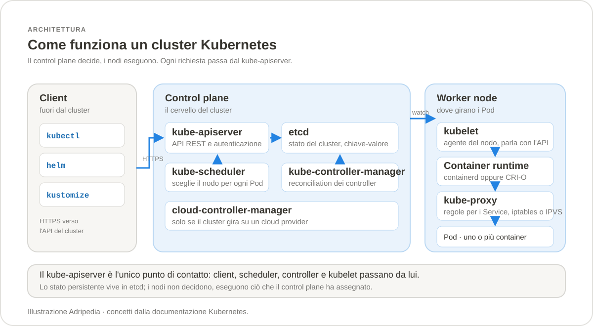
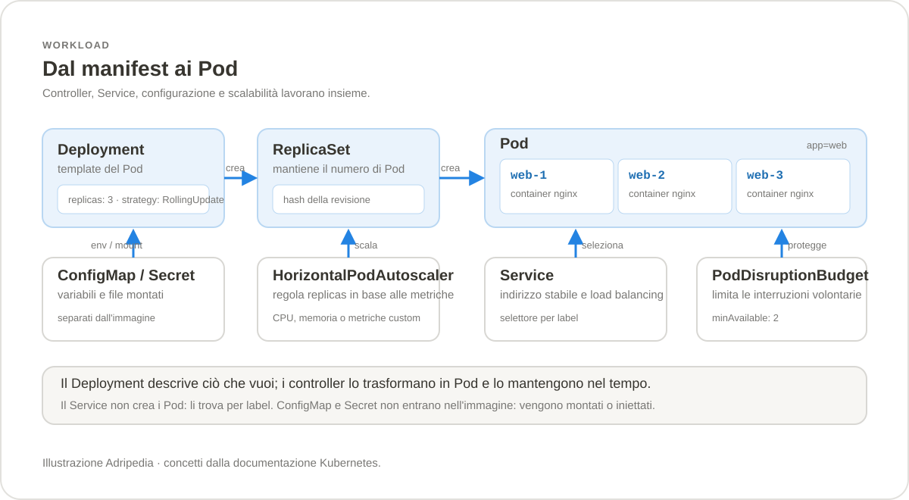
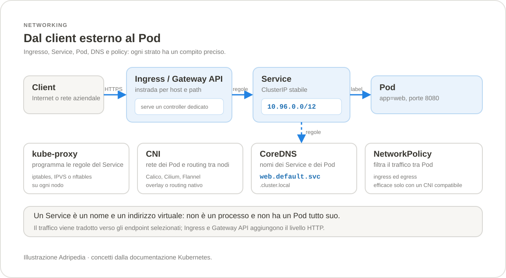
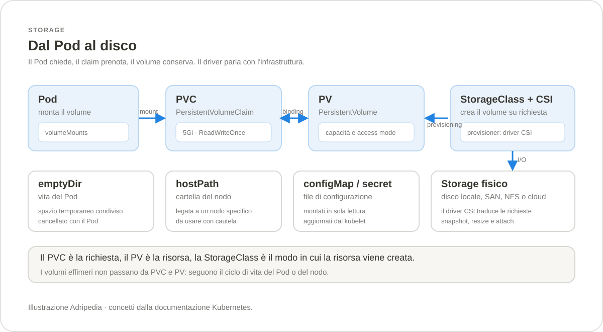
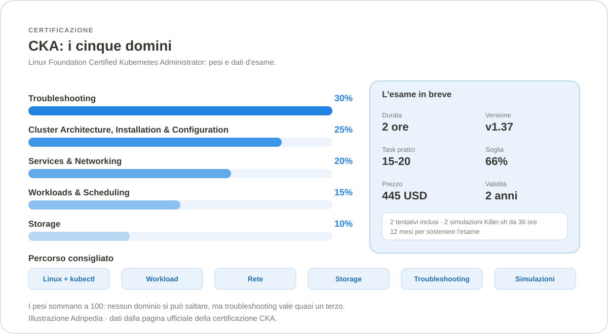

Sezione · Informatica
Kubernetes
Guida pratica a Kubernetes: che cos'è, come installarlo su
Windows e Linux, i comandi che servono davvero e gli approfondimenti su
scheduling, rete, storage e sicurezza. In più, una guida completa
alla certificazione CKA. Contenuti verificati su
Kubernetes 1.37.
1.37,
ultima patch verificata 1.37.2 (28 ottobre 2026). La
certificazione CKA è basata su Kubernetes v1.37.

Che cos'è Kubernetes
Kubernetes è un orchestratore di container: prende applicazioni impacchettate in container e le esegue su un gruppo di macchine, occupandosi di avvio, distribuzione, rete, storage, aggiornamenti e ripristino. È un progetto open source della CNCF, nato nel 2014 dalle esperienze di Google con Borg, ed è oggi lo standard di fatto per eseguire container in produzione.
La differenza rispetto a Docker non è il formato dei container — le immagini OCI sono le stesse — ma il livello di gestione. Docker risponde alla domanda «come avvio questo container?». Kubernetes risponde a «come mantengo cento servizi in esecuzione, distribuiti, raggiungibili e aggiornabili senza fermare tutto?».
Stato desiderato e riconciliazione
In Kubernetes non si impartiscono ordini come «avvia questo container». Si descrive lo stato desiderato in un file YAML e lo si applica al cluster. I controller osservano continuamente lo stato reale e lo riportano a quello desiderato: è il cosiddetto reconciliation loop.
Se dichiari tre repliche di un Deployment e un Pod si guasta, il ReplicaSet ne crea subito un altro. Se modifichi il numero di repliche, il controller aggiunge o rimuove Pod. Il meccanismo è idempotente: applicare due volte lo stesso manifest produce lo stesso risultato.
apiVersion: apps/v1
kind: Deployment
metadata:
name: web
spec:
replicas: 3
selector:
matchLabels:
app: web
template:
metadata:
labels:
app: web
spec:
containers:
- name: nginx
image: nginx:1.29-alpine
ports:
- containerPort: 80
Con kubectl apply -f deployment.yaml il cluster crea il
Deployment, che a sua volta crea un ReplicaSet e i tre Pod. Da quel
momento non serve intervenire: se qualcosa cambia, il controller
corregge.
kubectl create e kubectl run servono per
prove rapide; per tutto ciò che deve restare si usano manifest
versionati in Git, applicati con apply. È la base
di GitOps.
L'architettura
Un cluster ha due parti. Il control plane prende le decisioni e conserva lo stato; i worker node eseguono i carichi. In un cluster gestito il control plane è nascosto dal provider; in un cluster self-hosted lo amministri tu.
| Componente | Dove | Cosa fa |
|---|---|---|
kube-apiserver |
Control plane | Espone l'API REST, autentica e autorizza le richieste, valida gli oggetti. È l'unico componente che parla direttamente con etcd. |
etcd |
Control plane | Archivio chiave-valore distribuito con tutto lo stato del cluster. Va salvato con backup regolari. |
kube-scheduler |
Control plane | Assegna i Pod non ancora schedulati a un nodo, in base a risorse, vincoli, affinità e taint. |
kube-controller-manager |
Control plane | Esegue i controller che riconciliano Deployment, ReplicaSet, Job, Node, ServiceAccount e altri oggetti. |
cloud-controller-manager |
Control plane | Integra il cluster con il cloud: load balancer, volumi, nodi. Presente solo sui cluster cloud. |
kubelet |
Ogni nodo | Riceve le specifiche dei Pod assegnati al nodo e li avvia tramite il container runtime. Riferisce stato e salute. |
kube-proxy |
Ogni nodo | Implementa le regole di rete dei Service con iptables, IPVS o nftables. In alcuni CNI può essere sostituito. |
| Container runtime | Ogni nodo | Esegue i container tramite l'interfaccia CRI: containerd o CRI-O. |
Gli oggetti che servono
Tutto in Kubernetes è un oggetto con un kind, una
apiVersion e dei metadati. Alcuni vivono in un
namespace, altri sono globali nel cluster.
| Oggetto | Ambito | A cosa serve |
|---|---|---|
Pod | Namespace | Una o più unità container che condividono rete e storage. È l'unità minima eseguibile; di solito non si crea a mano. |
ReplicaSet | Namespace | Mantiene un numero stabile di repliche di un Pod. Raramente si scrive direttamente. |
Deployment | Namespace | Gestisce ReplicaSet e aggiornamenti rolling. È il modo standard per i servizi stateless. |
StatefulSet | Namespace | Pod con identità stabile, ordine di avvio e volume dedicato: database e cluster distribuiti. |
DaemonSet | Namespace | Un Pod su ogni nodo (o su un sottoinsieme): agent di log, monitoraggio, rete. |
Job / CronJob | Namespace | Attività che terminano, una volta o con una pianificazione periodica. |
Service | Namespace | Indirizzo stabile e bilanciamento verso un insieme di Pod, selezionati per label. |
Ingress | Namespace | Instrada il traffico HTTP/HTTPS verso i Service; richiede un controller Ingress. |
ConfigMap / Secret | Namespace | Configurazione e dati sensibili separati dall'immagine. |
PersistentVolumeClaim | Namespace | Richiesta di storage persistente, soddisfatta da un PersistentVolume. |
NetworkPolicy | Namespace | Regole firewall tra Pod; efficaci solo se il CNI le supporta. |
Role / RoleBinding | Namespace | Permessi RBAC limitati a un namespace. |
ClusterRole / ClusterRoleBinding | Cluster | Permessi globali o validi in tutti i namespace. |
Namespace | Cluster | Suddivisione logica con quote, RBAC e policy proprie. |
Node | Cluster | Una macchina registrata nel cluster; non si crea con YAML, la registra il kubelet. |
PersistentVolume / StorageClass | Cluster | Storage disponibile e profili per crearlo dinamicamente. |
Cluster gestito o self-hosted
| Aspetto | Cluster gestito | Self-hosted con kubeadm |
|---|---|---|
| Control plane | Gestito dal provider, spesso con SLA. | Installato e mantenuto da te, anche in alta disponibilità. |
| Upgrade | Pianificati o automatici; i nodi restano tuoi. | Procedura manuale con kubeadm upgrade, un minor alla volta. |
| etcd | Nascosto e replicato dal provider. | Tu: backup con etcdctl snapshot save, quorum e dischi. |
| Costo | Canone per cluster e per nodo. | Solo infrastruttura, ma tempo di gestione. |
| Controllo | Limitato alle configurazioni esposte. | Completo su componenti, flag e rete. |
| Quando usarlo | Produzione, team piccoli, pochi amministratori. | Laboratori, ambienti on-premise, esigenze particolari. |
Per lo studio e la CKA vanno benissimo i cluster locali: minikube, kind, k3d o l'opzione Kubernetes di Docker Desktop. Per iniziare senza installare nulla si possono usare i playground online del sito ufficiale.
Kubernetes e Docker
Docker e Kubernetes non sono alternativi. Kubernetes usa le stesse
immagini OCI costruite con docker build o
buildx, ma non ha bisogno del demone Docker: parla con
il runtime tramite CRI (Container Runtime
Interface). Dagli anni in cui Kubernetes includeva Docker come
runtime, l'astrazione è stata resa esplicita e oggi il runtime
tipico è containerd.
| Domanda | Docker | Kubernetes |
|---|---|---|
| Unità di lavoro | Container. | Pod, gestito da controller. |
| Configurazione | Dockerfile e compose.yaml. | Manifest YAML applicati all'API. |
| Rete | Bridge locale, porte pubblicate con -p. | Rete piatta del cluster, Service e DNS interno. |
| Storage | Volumi e bind mount. | PV, PVC e StorageClass. |
| Scala | Manuale, su un host o con Swarm. | Repliche, HPA, scheduling su molti nodi. |
| Uso tipico | Sviluppo, build, servizi singoli. | Produzione distribuita e piattaforme interne. |
Quando usarlo e quando no
Kubernetes dà il meglio di sé quando ci sono molti servizi, più ambienti e la necessità di aggiornamenti senza interruzioni. Ha però un costo di apprendimento e di gestione che non sempre si ripaga.
| Buon candidato | Candidato discutibile |
|---|---|
| Molti microservizi con esigenze di scala e rilascio indipendenti. | Una singola applicazione monolitica su un server, con carico prevedibile. |
| Team che devono standardizzare deploy, osservabilità e policy. | Team molto piccolo senza esperienza di container e rete. |
| Carichi variabili, con picchi e necessità di scalare. | Vincoli forti di costo fisso o hardware speciale non virtualizzabile. |
| Ambienti che beneficiano di GitOps e rilascio continuo. | Applicazioni stateful complesse senza competenze su storage e backup. |
Versioni e compatibilità
Kubernetes segue un ciclo di rilascio di circa quattro mesi per ogni minor e mantiene il supporto per le tre versioni minor più recenti. Chi aggiorna deve procedere un minor alla volta: da 1.35 a 1.37 si passa da 1.36.
| Versione | Stato | Nota |
|---|---|---|
1.37 | Supportata | Versione documentata in questa guida; patch verificata 1.37.2. |
1.36 | Supportata | Aggiornamento consentito verso la 1.37. |
1.35 | Supportata | La più vecchia delle tre coperte. |
1.34 e precedenti | Non supportate | Fuori dalla finestra di supporto: aggiornare prima di esporre il cluster. |
Anche kubectl ha una regola di compatibilità: una
versione del client funziona con il server entro un minor
di distanza, in entrambe le direzioni. Per la CKA la
versione dell'esame è quella del cluster fornito
nell'ambiente.
kubectl version --client
kubectl version
kubectl cluster-info
kubectl get nodes -o wide
kubectl get namespaces
kubectl version mostra client e server;
cluster-info stampa l'indirizzo dell'API e i servizi
principali, utile per capire se il contesto attivo è quello
giusto.
Fonti
Scegliere il tipo di cluster
Non esiste un solo modo di installare Kubernetes. La scelta dipende dall'obiettivo: imparare, sviluppare, fare laboratorio per la CKA o gestire la produzione.
| Strumento | Dove gira | Ideale per | Costo di gestione |
|---|---|---|---|
| Docker Desktop | Windows, macOS, Linux | Prove rapide con un cluster a un nodo già pronto. | Minimo, ma richiede Docker Desktop. |
| minikube | Windows, macOS, Linux | Studio, add-on, driver diversi, cluster a più nodi. | Basso. |
| kind | Windows, macOS, Linux | Test di manifest e CI; cluster effimeri e multi-nodo. | Basso, richiede Docker o Podman. |
| k3d | Windows, macOS, Linux | Lab leggeri, k3s, ingress e storage locale. | Basso. |
| kubeadm | Linux (VM o bare metal) | Cluster self-hosted, anche multi-nodo e in HA. | Alto: control plane, etcd, upgrade, rete. |
| Cluster gestito | Cloud | Produzione senza amministrare il control plane. | Canone, ma nessun server da mantenere. |
kubeadm su due
VM, il drain di un nodo e il backup di etcd. Sono attività
che l'esame richiede davvero.
Prima di iniziare
Per un cluster locale serve un runtime container. Su Windows il più
semplice è Docker Desktop con backend WSL 2; in alternativa
va bene Podman o un runtime compatibile. Per kubeadm
serve una macchina Linux con almeno 2 CPU, 2 GB di RAM e spazio
disco sufficiente per immagini e etcd.
| Requisito | Perché |
|---|---|
| 2 CPU e 2 GB di RAM per nodo | Il control plane e i carichi di sistema consumano risorse anche a riposo. |
Runtime CRI: containerd o CRI-O | Il kubelet non avvia container direttamente: usa l'interfaccia CRI. |
| Swap disattivato | Il kubelet richiede che lo swap sia off; con lo swap la memoria non è gestibile in modo prevedibile. |
Moduli kernel overlay e br_netfilter | Servono per il file system dei container e per il bridge di rete. |
net.ipv4.ip_forward=1 | Consente l'inoltro dei pacchetti tra Pod e nodi. |
| Hostname e MAC univoci | Nodi duplicati confondono kubelet e CNI. |
| Porte libere | API, etcd, kubelet e i servizi esposti devono poter ascoltare. |
| Sincronizzazione dell'orologio | Certificati, token e log dipendono da un orologio corretto. |
Porte da conoscere
| Componente | Porta | Protocollo | Dove |
|---|---|---|---|
kube-apiserver | 6443 | TCP | Control plane |
etcd | 2379–2380 | TCP | Control plane |
kubelet | 10250 | TCP | Tutti i nodi |
kube-scheduler | 10259 | TCP | Control plane |
kube-controller-manager | 10257 | TCP | Control plane |
NodePort | 30000–32767 | TCP/UDP | Tutti i nodi, se usato |
| Calico BGP | 179 | TCP | Nodi, se si usa BGP |
| VXLAN (Flannel, Calico) | 8472 | UDP | Nodi |
Docker Desktop su Windows
È il percorso più rapido: Docker Desktop include un cluster Kubernetes a un nodo che condivide il runtime con i container Docker. Si abilita da Settings › Kubernetes › Enable Kubernetes, poi si preme Apply & restart e si attende che il badge diventi verde.
# verifica i contesti disponibili
kubectl config get-contexts
# passa al cluster di Docker Desktop
kubectl config use-context docker-desktop
# controlla nodo e Pod di sistema
kubectl get nodes
kubectl get pods -n kube-systemminikube
minikube crea un cluster a un nodo (o più nodi) dentro una VM, un container o direttamente sull'host. È ottimo per studio e add-on, e permette di scegliere la versione di Kubernetes.
# installazione su Windows con winget
winget install Kubernetes.minikube
# cluster con driver Docker, versione scelta e risorse dedicate
minikube start --driver=docker --kubernetes-version=v1.37.2 --cpus=2 --memory=4g
# stato, nodi e dashboard
minikube status
kubectl get nodes
minikube dashboard
# fermare e cancellare
minikube stop
minikube delete
Su Windows senza Docker Desktop si può usare il driver
hyperv (richiede Hyper-V) o virtualbox.
Per un cluster multi-nodo: minikube start --nodes=3.
Il comando minikube kubectl -- usa il binario
kubectl incluso, utile se non è nel PATH.
kind
Kubernetes in Docker: i nodi del cluster sono container Docker. È veloce, riproducibile e molto usato nelle pipeline CI. Supporta cluster multi-nodo con un file di configurazione.
# installazione su Windows
winget install Kubernetes.kind
# cluster a un nodo con una versione precisa
kind create cluster --name adripedia --image kindest/node:v1.37.2
# elenco, contesto e verifica
kind get clusters
kubectl cluster-info --context kind-adripedia
kubectl get nodes
# cancellazione
kind delete cluster --name adripediaEsempio di cluster a tre nodi (un control plane e due worker):
# kind-config.yaml
kind: Cluster
apiVersion: kind.x-k8s.io/v1alpha4
nodes:
- role: control-plane
- role: worker
- role: workerkind create cluster --name lab --config kind-config.yaml
kubectl get nodeskindest/node deve esistere per la versione scelta.
Se non esiste, kind usa l'immagine predefinita della sua release:
controlla le note di rilascio di kind.
k3d
k3d esegue k3s, una distribuzione leggera e certificata di Kubernetes, dentro container Docker. È comodo per laboratori rapidi, ingress e storage locale, e consuma meno di un cluster tradizionale.
# installazione su Windows
winget install --id k3d.k3d -e
# cluster con due agent e porta 8080 inoltrata al load balancer
k3d cluster create adripedia --agents 2 --port "8080:80@loadbalancer"
# elenco e contesto
k3d cluster list
k3d kubeconfig merge adripedia --kubeconfig-switch-context
kubectl get nodes
# cancellazione
k3d cluster delete adripedia
k3s include componenti ridotti rispetto a Kubernetes upstream
(per esempio un datastore SQLite al posto di etcd, salvo
configurazione). Va benissimo per studiare API e manifest, ma per
la CKA è meglio esercitarsi anche su un cluster
kubeadm, che è quello dell'esame.
kubeadm su Linux
kubeadm è lo strumento ufficiale per creare un
cluster self-hosted. I passaggi seguenti valgono per Ubuntu o
Debian; adatta i comandi alla distribuzione. Vanno eseguiti su
tutti i nodi, control plane compreso.
1. Prerequisiti del sistema
# swap off immediato e permanente
sudo swapoff -a
sudo sed -i '/ swap / s/^\(.*\)$/#\1/g' /etc/fstab
# moduli kernel richiesti
cat <<EOF | sudo tee /etc/modules-load.d/k8s.conf
overlay
br_netfilter
EOF
sudo modprobe overlay
sudo modprobe br_netfilter
# parametri di rete
cat <<EOF | sudo tee /etc/sysctl.d/k8s.conf
net.bridge.bridge-nf-call-iptables = 1
net.bridge.bridge-nf-call-ip6tables = 1
net.ipv4.ip_forward = 1
EOF
sudo sysctl --system/etc/fstab va
commentata, altrimenti lo swap torna dopo un riavvio.
2. Runtime containerd
sudo apt-get update
sudo apt-get install -y containerd
sudo mkdir -p /etc/containerd
containerd config default | sudo tee /etc/containerd/config.toml >/dev/null
# usa systemd come cgroup driver
sudo sed -i 's/SystemdCgroup = false/SystemdCgroup = true/' /etc/containerd/config.toml
sudo systemctl restart containerd
sudo systemctl enable containerd
Il cgroup driver di containerd deve coincidere con quello del
kubelet. Con systemd su entrambi si evitano problemi
di gestione delle risorse e di stabilità dei Pod.
3. kubelet, kubeadm e kubectl
sudo apt-get update
sudo apt-get install -y apt-transport-https ca-certificates curl gpg
sudo mkdir -p -m 755 /etc/apt/keyrings
curl -fsSL https://pkgs.k8s.io/core:/stable:/v1.37/deb/Release.key \
| sudo gpg --dearmor -o /etc/apt/keyrings/kubernetes-apt-keyring.gpg
echo 'deb [signed-by=/etc/apt/keyrings/kubernetes-apt-keyring.gpg] https://pkgs.k8s.io/core:/stable:/v1.37/deb/ /' \
| sudo tee /etc/apt/sources.list.d/kubernetes.list
sudo apt-get update
sudo apt-get install -y kubelet kubeadm kubectl
sudo apt-mark hold kubelet kubeadm kubectl
apt-mark hold impedisce a un apt upgrade
generico di aggiornare i componenti fuori dalla procedura
controllata. Per RHEL e derivate i pacchetti arrivano dal
repository pkgs.k8s.io con dnf.
4. Inizializzare il control plane
# sul primo nodo, con un CIDR dei Pod dedicato
sudo kubeadm init --pod-network-cidr=10.244.0.0/16 --apiserver-advertise-address=<IP-del-nodo>
# configurare kubectl per l'utente corrente
mkdir -p $HOME/.kube
sudo cp -i /etc/kubernetes/admin.conf $HOME/.kube/config
sudo chown $(id -u):$(id -g) $HOME/.kube/config
kubectl get nodes
kubeadm init stampa alla fine il comando di
join per i worker. Conservalo: contiene token e hash
del certificato CA. Se lo perdi, puoi rigenerarlo con
kubeadm token create --print-join-command.
5. Installare un CNI
Senza un plugin di rete i Pod restano in Pending o non
comunicano. Flannel è semplice e si abbina al CIDR
10.244.0.0/16; Calico e Cilium offrono anche
NetworkPolicy e funzioni avanzate.
# Flannel
kubectl apply -f https://github.com/flannel-io/flannel/releases/latest/download/kube-flannel.yml
# controlla che i Pod di sistema diventino Running
kubectl get pods -n kube-system -wkubeadm init.
6. Aggiungere i worker
# sul worker, dopo aver eseguito i prerequisiti e installato containerd, kubelet e kubeadm
sudo kubeadm join <IP-control-plane>:6443 \
--token <token> \
--discovery-token-ca-cert-hash sha256:<hash>
# sul control plane
kubectl get nodes
kubectl get pods -ASe il join fallisce, controlla la raggiungibilità della porta 6443, la sincronizzazione dell'orologio e che il token non sia scaduto (durata predefinita 24 ore).
7. Control plane in alta disponibilità
Per un cluster HA servono almeno tre nodi control plane e un
bilanciatore davanti all'API. kubeadm init si esegue
con --control-plane-endpoint e
--upload-certs; gli altri control plane si uniscono con
--control-plane --certificate-key. etcd resta in
quorum: con tre nodi si tollera il guasto di uno.
sudo kubeadm init \
--control-plane-endpoint="k8s-api.example.com:6443" \
--upload-certs \
--pod-network-cidr=10.244.0.0/16Il primo cluster
Qualunque sia il metodo scelto, la verifica è la stessa:
kubectl cluster-info
kubectl get nodes -o wide
kubectl get pods -A
kubectl get namespaces
kubectl api-resources
kubectl versionPoi si prova un carico reale:
kubectl create deployment web --image=nginx:1.29-alpine --replicas=2
kubectl get deploy,rs,pods
kubectl expose deployment web --port=80 --type=ClusterIP
kubectl get svc web
kubectl port-forward svc/web 8080:80
Apri http://localhost:8080: se risponde, il cluster
funziona. port-forward è solo per debug locale e
non va usato come esposizione di produzione.
Upgrade e backup
Con kubeadm si aggiorna un minor alla volta:
prima il control plane, poi i worker, svuotando un nodo per volta.
Le patch si possono applicare più rapidamente, ma vanno
comunque pianificate.
| Fase | Comando | Attenzione |
|---|---|---|
| Pianificazione | kubeadm upgrade plan | Verifica le versioni disponibili e i prerequisiti. |
| Control plane | kubeadm upgrade apply v1.37.2 | Un solo control plane alla volta in HA. |
| Worker | kubectl drain <nodo> --ignore-daemonsets | Sposta i Pod; usa --delete-emptydir-data se serve. |
| kubelet | apt-get install kubelet=1.37.2-1.1 | Riavvia il servizio e verifica lo stato. |
| Ritorno | kubectl uncordon <nodo> | Solo dopo che il nodo è di nuovo Ready. |
| Backup etcd | etcdctl snapshot save | Prima di ogni upgrade e con regolarità. |
# upgrade di kubeadm sul control plane
sudo apt-mark unhold kubeadm
sudo apt-get update
sudo apt-get install -y kubeadm=1.37.2-1.1
sudo kubeadm upgrade plan
sudo kubeadm upgrade apply v1.37.2
sudo apt-mark hold kubeadm
# svuotare un worker, aggiornarlo e riabilitarlo
kubectl drain <nodo> --ignore-daemonsets --delete-emptydir-data
sudo apt-mark unhold kubelet kubectl
sudo apt-get install -y kubelet=1.37.2-1.1 kubectl=1.37.2-1.1
sudo systemctl daemon-reload
sudo systemctl restart kubelet
sudo apt-mark hold kubelet kubectl
kubectl uncordon <nodo># backup di etcd dal control plane
sudo ETCDCTL_API=3 etcdctl \
--endpoints=https://127.0.0.1:2379 \
--cacert=/etc/kubernetes/pki/etcd/ca.crt \
--cert=/etc/kubernetes/pki/etcd/server.crt \
--key=/etc/kubernetes/pki/etcd/server.key \
snapshot save /var/backups/etcd-$(date +%F-%H%M).db
# verifica del backup
sudo ETCDCTL_API=3 etcdctl snapshot status /var/backups/etcd-2026-11-05-1200.db --write-out=tableCluster gestiti
I provider cloud offrono Kubernetes con control plane gestito: EKS su AWS, GKE su Google Cloud, AKS su Azure. Tu gestisci nodi, carichi, rete e policy; il provider gestisce API server, etcd e la loro disponibilità.
| Servizio | Provider | Particolarità |
|---|---|---|
| EKS | AWS | Integrazione IAM e VPC; node group gestiti o Fargate. |
| GKE | Google Cloud | Autopilot per delegare anche i nodi; ottima integrazione con rete e logging. |
| AKS | Azure | Integrazione Microsoft Entra ID e Azure Monitor; nodi in pool. |
In un cluster gestito kubectl funziona allo stesso
modo: cambia il modo in cui si ottiene il kubeconfig e
cambiano le classi di storage e i load balancer disponibili. La
CKA si concentra sul Kubernetes upstream, quindi i concetti restano
validi.
Fonti
Digita per filtrare la cheat sheet e i comandi qui sotto.
Contesto e cluster
Il kubeconfig contiene cluster, utenti e contesti. Un contesto è la combinazione di cluster, utente e namespace predefinito: quasi tutti i problemi iniziali derivano dal contesto sbagliato.
kubectl config view
kubectl config current-context
kubectl config get-contexts
kubectl config use-context <nome>
kubectl config set-context --current --namespace=<namespace>
kubectl cluster-info
kubectl cluster-info dump
kubectl version
kubectl api-resources
kubectl api-versions
kubectl get nodes -o wide
kubectl get namespaces
kubectl get all -A
kubectl explain deployment.spec
kubectl explain pod --recursivedefault mentre la risorsa è altrove. Usa
-n <namespace> oppure -A per
cercare in tutto il cluster.
Nodi
| Comando | Cosa fa |
|---|---|
kubectl get nodes -o wide | Elenca i nodi con IP, runtime e versione. |
kubectl describe node <nodo> | Mostra capacità, allocazione, taint, condizioni ed eventi. |
kubectl top nodes | CPU e memoria per nodo; richiede il Metrics Server. |
kubectl cordon <nodo> | Segna il nodo come non schedulabile, senza spostare i Pod. |
kubectl drain <nodo> --ignore-daemonsets | Svuota il nodo in modo ordinato prima di un upgrade. |
kubectl uncordon <nodo> | Rende di nuovo schedulabile il nodo. |
kubectl taint nodes <nodo> key=value:NoSchedule | Aggiunge un taint per allontanare i Pod senza tolleranza. |
kubectl taint nodes <nodo> key=value:NoSchedule- | Rimuove il taint (il trattino finale). |
kubectl label node <nodo> ruolo=worker | Assegna una label usata da affinity o nodeSelector. |
kubectl get nodes --show-labels | Elenca i nodi con tutte le label. |
kubectl annotate node <nodo> nota=valore | Aggiunge un'annotazione al nodo. |
drain non è delete.
Con --ignore-daemonsets i DaemonSet restano, mentre i
Pod con emptyDir bloccano il drain finché non
aggiungi --delete-emptydir-data. Verifica sempre quali
Pod verranno espulsi prima di confermare.
Pod
kubectl get pods
kubectl get pods -A -o wide
kubectl get pods --show-labels
kubectl get pods -l app=web
kubectl get pods --field-selector spec.nodeName=<nodo>
kubectl get pod <pod> -o yaml
kubectl describe pod <pod>
kubectl logs <pod>
kubectl logs -f <pod>
kubectl logs <pod> -c <container>
kubectl logs <pod> --previous
kubectl logs -l app=web --tail=100
kubectl exec -it <pod> -- sh
kubectl exec <pod> -- env
kubectl run prova --image=busybox:1.36 --restart=Never -- sleep 3600
kubectl run prova --rm -it --image=busybox:1.36 --restart=Never -- sh
kubectl delete pod <pod>
kubectl delete pod <pod> --grace-period=0 --force
kubectl port-forward pod/<pod> 8080:80
kubectl cp ./file.txt <pod>:/tmp/file.txt
kubectl cp <pod>:/tmp/report.txt ./report.txt
kubectl attach -it <pod>
kubectl top pod <pod>
kubectl wait --for=condition=Ready pod/<pod> --timeout=60s
kubectl patch pod <pod> -p '{"metadata":{"labels":{"tier":"web"}}}'
kubectl edit pod <pod>kubectl run oggi crea un Pod. Per un
Deployment si usa kubectl create deployment. Le
vecchie sintassi con --generator sono state rimosse da
anni e non vanno usate, nemmeno negli appunti d'esame.
Deployment e workload
| Comando | Cosa fa |
|---|---|
kubectl create deployment web --image=nginx:1.29-alpine --replicas=3 | Crea un Deployment in modo imperativo. |
kubectl get deployments,replicasets,statefulsets,daemonsets | Mostra i workload principali. |
kubectl get deploy web -o yaml | Esporta la definizione completa. |
kubectl scale deployment web --replicas=5 | Cambia il numero di repliche. |
kubectl set image deployment/web nginx=nginx:1.30-alpine | Aggiorna l'immagine di un container. |
kubectl set env deployment/web LOG_LEVEL=debug | Imposta una variabile d'ambiente. |
kubectl set resources deployment/web --limits=cpu=500m,memory=256Mi | Aggiorna limiti e richieste di risorse. |
kubectl rollout status deployment/web | Segue l'avanzamento di un rollout. |
kubectl rollout history deployment/web | Elenca le revisioni del Deployment. |
kubectl rollout undo deployment/web | Torna alla revisione precedente. |
kubectl rollout undo deployment/web --to-revision=2 | Torna a una revisione specifica. |
kubectl rollout restart deployment/web | Riavvia i Pod in modo graduale. |
kubectl rollout pause deployment/web | Sospende un rollout per modifiche multiple. |
kubectl rollout resume deployment/web | Riprende il rollout sospeso. |
kubectl autoscale deployment web --min=2 --max=10 --cpu-percent=70 | Crea un HorizontalPodAutoscaler. |
kubectl get hpa | Mostra stato e metriche degli autoscaler. |
kubectl create job hello --image=busybox:1.36 -- echo hello | Crea un Job che esegue un comando. |
kubectl create cronjob backup --image=busybox:1.36 --schedule="*/5 * * * *" -- date | Crea un CronJob ogni cinque minuti. |
kubectl create job --from=cronjob/backup backup-manuale | Esegue subito un Job da un CronJob. |
kubectl get jobs,cronjobs | Elenca Job e CronJob. |
kubectl delete deployment web | Elimina il Deployment e i Pod gestiti. |
Esempio di manifest con probe, risorse e strategia di aggiornamento:
apiVersion: apps/v1
kind: Deployment
metadata:
name: web
spec:
replicas: 3
strategy:
type: RollingUpdate
rollingUpdate:
maxSurge: 1
maxUnavailable: 0
selector:
matchLabels:
app: web
template:
metadata:
labels:
app: web
spec:
containers:
- name: nginx
image: nginx:1.29-alpine
ports:
- containerPort: 80
resources:
requests:
cpu: 100m
memory: 128Mi
limits:
cpu: 500m
memory: 256Mi
readinessProbe:
httpGet:
path: /
port: 80
initialDelaySeconds: 3
periodSeconds: 5
livenessProbe:
httpGet:
path: /
port: 80
initialDelaySeconds: 10
periodSeconds: 10ConfigMap e Secret
kubectl create configmap app-config --from-literal=ENV=prod
kubectl create configmap app-config --from-file=config.properties
kubectl get configmaps
kubectl describe configmap app-config
kubectl get configmap app-config -o yaml
kubectl create secret generic db-secret --from-literal=password=s3greto
kubectl create secret generic db-secret --from-file=./password.txt
kubectl create secret tls sito-tls --cert=tls.crt --key=tls.key
kubectl create secret docker-registry registry-key --docker-server=registry.example.com --docker-username=utente --docker-password=password
kubectl get secrets
kubectl describe secret db-secret
kubectl get secret db-secret -o jsonpath='{.data.password}' | base64 -d
kubectl create secret generic db-secret --from-literal=password=s3greto --dry-run=client -o yaml > secret.yamlService e rete
kubectl get services
kubectl get services -A -o wide
kubectl get endpoints
kubectl get endpointslices
kubectl expose deployment web --port=80 --target-port=80
kubectl expose deployment web --type=NodePort --port=80
kubectl create service clusterip web --tcp=80:80
kubectl get service web -o yaml
kubectl describe service web
kubectl port-forward service/web 8080:80
kubectl get ingress
kubectl describe ingress <ingress>
kubectl get networkpolicies
kubectl apply -f networkpolicy.yaml
kubectl run netshoot --rm -it --image=nicolaka/netshoot --restart=Never -- bash
kubectl exec -it <pod> -- nslookup kubernetes.default
kubectl exec -it <pod> -- wget -qO- http://web.default.svc.cluster.local
Esempio di NetworkPolicy che consente l'ingresso solo ai Pod con
label role=frontend:
apiVersion: networking.k8s.io/v1
kind: NetworkPolicy
metadata:
name: web-da-frontend
namespace: default
spec:
podSelector:
matchLabels:
app: web
policyTypes:
- Ingress
ingress:
- from:
- podSelector:
matchLabels:
role: frontend
ports:
- protocol: TCP
port: 80Storage
kubectl get persistentvolumes
kubectl get persistentvolumeclaims
kubectl get pv,pvc -A
kubectl get storageclasses
kubectl get csidrivers
kubectl describe pvc <pvc>
kubectl get pvc <pvc> -o yaml
kubectl get volumeattachments
kubectl explain pvc.spec.accessModes
kubectl delete pvc <pvc>
Esempio di PVC con StorageClass predefinita. Il binding al PV può
essere immediato oppure avvenire al primo Pod che monta il volume
(WaitForFirstConsumer).
apiVersion: v1
kind: PersistentVolumeClaim
metadata:
name: dati
spec:
accessModes:
- ReadWriteOnce
resources:
requests:
storage: 5Gi
storageClassName: standardRBAC e sicurezza
kubectl get serviceaccounts
kubectl create serviceaccount ci
kubectl create token ci
kubectl create role pod-reader --verb=get,list,watch --resource=pods
kubectl create rolebinding ci-read --role=pod-reader --serviceaccount=default:ci
kubectl create clusterrole node-reader --verb=get,list --resource=nodes
kubectl create clusterrolebinding ci-node-read --clusterrole=node-reader --serviceaccount=default:ci
kubectl get roles,rolebindings
kubectl get clusterroles,clusterrolebindings
kubectl describe clusterrole view
kubectl auth can-i get pods
kubectl auth can-i create deployments -n produzione
kubectl auth can-i get pods --as=system:serviceaccount:default:ci
kubectl auth can-i '*' '*' --all-namespaces
kubectl auth whoami
kubectl get csr
kubectl certificate approve <csr>
kubectl certificate deny <csr>cluster-admin per le applicazioni.
Debug e troubleshooting
| Comando | A cosa serve |
|---|---|
kubectl get events --sort-by=.metadata.creationTimestamp | Eventi in ordine cronologico: spesso contengono la causa. |
kubectl get events -A --field-selector type=Warning | Solo gli eventi di avviso in tutto il cluster. |
kubectl describe pod <pod> | Stato, condizioni, immagine, volumi ed eventi del Pod. |
kubectl logs <pod> --previous | Log dell'istanza precedente, dopo un crash. |
kubectl debug -it <pod> --image=busybox:1.36 --target=<container> | Container effimero con gli stessi namespace del target. |
kubectl debug node/<nodo> -it --image=busybox:1.36 | Pod di debug sul nodo, con accesso al file system dell'host. |
kubectl get pod <pod> -o jsonpath='{.status.containerStatuses[*].state}' | Stato dettagliato dei container. |
kubectl get pod <pod> -o custom-columns=NOME:.metadata.name,STATO:.status.phase | Tabella personalizzata e leggibile. |
kubectl top pods -A | Consumo di CPU e memoria per Pod. |
kubectl get pods -w | Osserva i cambiamenti in tempo reale. |
kubectl describe node <nodo> | Pressione su CPU, memoria e disco; Pod allocati. |
kubectl logs -n kube-system deployment/coredns | Log del DNS del cluster. |
Sequenza tipica quando un Pod non parte:
kubectl get pods
kubectl describe pod <pod>
kubectl logs <pod>
kubectl logs <pod> --previous
kubectl get events --sort-by=.metadata.creationTimestamp
kubectl get pod <pod> -o yaml
kubectl auth can-i list pods
Se il Pod è Pending, guarda gli eventi e
describe node: spesso mancano risorse, il nodo ha un
taint o la PVC non è ancora bound. Se è
CrashLoopBackOff, il problema è quasi sempre
nell'applicazione o nella configurazione; se è
ImagePullBackOff, controlla nome dell'immagine,
registry e imagePullSecrets.
Helm e Kustomize
helm repo add bitnami https://charts.bitnami.com/bitnami
helm repo update
helm search repo nginx
helm install web bitnami/nginx --namespace web --create-namespace
helm list -A
helm status web -n web
helm get values web -n web
helm upgrade web bitnami/nginx -n web --set replicaCount=3
helm rollback web 1 -n web
helm uninstall web -n web
helm template web bitnami/nginx
helm lint ./chart
helm package ./chart
kustomize build overlays/prod
kubectl kustomize overlays/prod
kubectl apply -k overlays/prod
kubectl diff -k overlays/prod
Helm gestisce pacchetti con template e valori; Kustomize compone
manifest esistenti con patch, senza template. kubectl
include Kustomize e lo attiva con -k.
etcd e manutenzione
kubectl -n kube-system get pods -l component=etcd
kubectl -n kube-system exec etcd-<nodo> -- etcdctl endpoint health
kubectl -n kube-system exec etcd-<nodo> -- etcdctl member list
kubectl -n kube-system exec etcd-<nodo> -- etcdctl snapshot save /var/lib/etcd/snapshot.db
kubectl -n kube-system exec etcd-<nodo> -- etcdctl snapshot status /var/lib/etcd/snapshot.db
kubeadm upgrade plan
kubeadm upgrade apply v1.37.2
kubeadm token list
kubeadm token create --print-join-command
kubeadm token delete <token>
kubeadm certs check-expiration
kubeadm certs renew all
kubeadm reset
crictl ps
crictl pods
crictl images
crictl logs <container-id>
systemctl status kubelet
journalctl -u kubelet -fkubeadm reset
cancella lo stato locale del nodo; kubectl delete su
un namespace elimina tutto ciò che contiene. Controlla il
contesto e il namespace prima di premere Invio, soprattutto in
produzione.
Scorciatoie
| Scorciatoia | Significato |
|---|---|
kubectl get po | pods: kubectl accetta i nomi abbreviati delle risorse. |
kubectl get deploy | deployments. |
kubectl get svc | services. |
kubectl get ns | namespaces. |
kubectl get pvc | persistentvolumeclaims. |
kubectl get cm | configmaps. |
kubectl get netpol | networkpolicies. |
kubectl get sa | serviceaccounts. |
-n <namespace> | Limita il comando a un namespace. |
-A | Tutti i namespace. |
-o wide | Più colonne: IP, nodo, immagini. |
-o yaml / -o json | Output completo dell'oggetto. |
-o name | Solo il nome qualificato della risorsa. |
-l app=web | Filtra per label selector. |
--field-selector | Filtra per campo, per esempio status.phase=Running. |
-w | Resta in ascolto e aggiorna l'output. |
--show-labels | Aggiunge la colonna delle label. |
--sort-by=.metadata.name | Ordina l'output per un campo. |
--dry-run=client -o yaml | Genera il manifest senza applicarlo. |
-f file.yaml | Applica, crea o elimina da file. |
-k cartella | Usa Kustomize su una cartella. |
--context <nome> | Usa un contesto diverso da quello corrente. |
alias k=kubectl
complete -o default -F __start_kubectl k
source <(kubectl completion bash)
kubectl completion zsh > "${fpath[1]}/_kubectl"kubectl completion powershell | Out-String | Invoke-Expression.
In un esame a tempo, saper scrivere i nomi delle risorse senza
errori fa risparmiare minuti preziosi.
Verbi più usati
| Verbo | Cosa fa | Esempio |
|---|---|---|
get | Legge uno o più oggetti. | kubectl get pods -A |
describe | Mostra dettagli ed eventi in forma leggibile. | kubectl describe node |
create | Crea una risorsa in modo imperativo. | kubectl create deployment |
apply | Crea o aggiorna da manifest. | kubectl apply -f app.yaml |
delete | Elimina una risorsa. | kubectl delete pod |
edit | Apre l'oggetto nell'editor. | kubectl edit svc web |
patch | Modifica parziale con JSON o strategic merge. | kubectl patch deploy web -p … |
replace | Sostituisce l'intero oggetto. | kubectl replace -f app.yaml |
logs | Legge l'output di un container. | kubectl logs -f pod |
exec | Esegue un comando dentro un container. | kubectl exec -it pod -- sh |
port-forward | Apre un tunnel locale verso un Pod o Service. | kubectl port-forward svc/web 8080:80 |
cp | Copia file da e verso i container. | kubectl cp pod:/tmp/x . |
scale | Cambia il numero di repliche. | kubectl scale deploy web --replicas=3 |
rollout | Gestisce status, history e undo. | kubectl rollout undo deploy/web |
expose | Crea un Service per un workload. | kubectl expose deploy web --port=80 |
label | Imposta o rimuove label. | kubectl label pod p tier=web |
annotate | Imposta o rimuove annotazioni. | kubectl annotate svc web nota=x |
taint | Gestisce i taint dei nodi. | kubectl taint nodes n1 key=v:NoSchedule |
cordon / uncordon | Esclude o riammette un nodo. | kubectl cordon node1 |
drain | Svuota un nodo dai Pod. | kubectl drain node1 --ignore-daemonsets |
auth | Verifica i permessi RBAC. | kubectl auth can-i get pods |
top | Mostra consumo di risorse. | kubectl top nodes |
explain | Spiega i campi di una risorsa. | kubectl explain pod.spec |
api-resources | Elenca tipi, verbi e scope delle API. | kubectl api-resources |
Questa sezione entra nei meccanismi che di solito restano impliciti: come il control plane prende le decisioni, come i Pod vengono assegnati ai nodi, come comunicano, dove finiscono i dati e come si diagnosticano i guasti. È il livello che serve per amministrare un cluster e per affrontare la certificazione CKA. All'inizio trovi il glossario dei termini più comuni; più avanti, le sezioni su memoria e immagini per i principali runtime.
Glossario
I termini che ricorrono più spesso, ordinati alfabeticamente. Le voci sono volutamente brevi: servono a rinfrescare un concetto, non a sostituire i capitoli precedenti.
66 voci in ordine alfabetico.
| Termine | Significato |
|---|---|
| Admission controller | Plugin che controlla o modifica una richiesta dopo autenticazione e autorizzazione, prima che l'oggetto venga salvato in etcd. Può validare (rifiutare) oppure mutare (impostare valori). |
| Affinity / anti-affinity | Regole che avvicinano o allontanano i Pod da nodi (nodeAffinity) o da altri Pod (podAffinity, podAntiAffinity). Accettano espressioni e pesi, non solo uguaglianze. |
| Annotation | Metadato chiave-valore non usato per selezionare le risorse. Serve a integrazioni, note e configurazioni lette da controller o strumenti esterni. |
| API server | Componente del control plane che espone l'API REST di Kubernetes. Autentica, autorizza, valida le richieste ed è l'unico a parlare direttamente con etcd. |
| Canary deployment | Rilascio graduale in cui una piccola parte del traffico va alla nuova versione. In Kubernetes si ottiene con più Deployment e un Service, oppure con strumenti dedicati. |
| CNI | Container Network Interface: standard con cui Kubernetes affida a un plugin la rete dei Pod e l'assegnazione degli IP. Esempi: Calico, Cilium, Flannel. |
| ConfigMap | Oggetto che contiene configurazione non sensibile, iniettata nei container come variabili d'ambiente o file montati. |
| Container runtime | Programma che esegue i container. Kubernetes ci parla tramite CRI; i runtime tipici sono containerd e CRI-O. |
| Control plane | Insieme dei componenti che prendono le decisioni: API server, etcd, scheduler e controller manager, più il cloud controller manager sui cluster cloud. |
| Cordon | Operazione che segna un nodo come non schedulabile senza spostare i Pod già presenti. Si annulla con uncordon. |
| CRD | CustomResourceDefinition: estensione dell'API che aggiunge un nuovo tipo di oggetto, gestito da un controller o da un operator. |
| CRI | Container Runtime Interface: contratto tra il kubelet e il runtime che esegue i container. |
| CronJob | Controller che crea Job secondo una pianificazione in formato cron, con regole di concorrenza e storico. |
| CSI | Container Storage Interface: standard con cui Kubernetes collega i volumi ai sistemi di storage tramite driver. |
| DaemonSet | Controller che mantiene un Pod su ogni nodo, o su un sottoinsieme selezionato. Tipico per agent di log, monitoraggio, CNI e CSI. |
| Deployment | Controller per applicazioni stateless: gestisce ReplicaSet, aggiornamenti graduali e rollback. |
| Drain | Operazione che svuota un nodo dai Pod prima di manutenzione o upgrade, rispettando i PodDisruptionBudget. Con --ignore-daemonsets lascia i DaemonSet. |
| EndpointSlice | Oggetto che elenca gli IP e le porte dei Pod pronti dietro un Service. Se è vuoto, il selettore o la readiness hanno un problema. |
| etcd | Archivio chiave-valore distribuito con consenso Raft che conserva lo stato del cluster. Va protetto con snapshot regolari e con il quorum. |
| Gateway API | Modello di routing HTTP, TCP e UDP più recente di Ingress, basato su GatewayClass, Gateway e HTTPRoute. |
| Headless Service | Service con clusterIP: None: non ha un IP virtuale e il DNS restituisce direttamente gli IP dei Pod. Si usa con gli StatefulSet. |
| Helm | Gestore di pacchetti per Kubernetes. I chart descrivono le risorse con template e valori personalizzabili. |
| HPA | HorizontalPodAutoscaler: aumenta o riduce le repliche in base a metriche come CPU e memoria. Richiede Metrics Server o un adapter. |
| Ingress | Oggetto che definisce regole HTTP e HTTPS verso i Service, per host e path. Da solo non fa nulla: serve un controller Ingress. |
| Init container | Container eseguito e completato prima dei container principali dello stesso Pod, utile per preparare file o attendere una dipendenza. |
| Job | Controller che esegue uno o più Pod fino al completamento, con un numero massimo di tentativi configurabile. |
| kubeadm | Strumento ufficiale per creare, unire, aggiornare e gestire cluster Kubernetes. |
| kubeconfig | File che contiene cluster, utenti, contesti e namespace predefinito usati da kubectl. |
| kubectl | Client a riga di comando con cui si inviano richieste all'API server. |
| kubelet | Agente presente su ogni nodo: avvia i Pod assegnati, esegue le probe e riferisce lo stato al control plane. |
| kube-proxy | Componente che programma sul nodo le regole di rete dei Service, con iptables, IPVS o nftables. |
| Label | Coppia chiave-valore usata da selector, Service e controller per selezionare oggetti. È il meccanismo che collega tra loro le risorse. |
| LimitRange | Policy di namespace che imposta valori predefiniti e limiti per container e PVC. |
| Liveness probe | Controllo che decide se un container è ancora vivo. Se fallisce, il container viene riavviato. |
| Manifest | File YAML o JSON che descrive uno o più oggetti Kubernetes, applicato con kubectl apply. |
| Metrics Server | Componente che raccoglie le metriche di CPU e memoria usate da HPA e da kubectl top. |
| Namespace | Suddivisione logica del cluster con RBAC, quote e policy proprie. Non è un isolamento di rete. |
| NetworkPolicy | Regole di filtro del traffico tra Pod. Diventano efficaci solo se il CNI le supporta e sono additive. |
| Node | Macchina registrata nel cluster. Il kubelet la rende disponibile e lo scheduler le assegna i Pod. |
| NodePort | Tipo di Service che espone una porta nell'intervallo 30000–32767 su ogni nodo. |
| Operator | Controller che estende Kubernetes per gestire applicazioni complesse tramite CRD e logica di riconciliazione. |
| PersistentVolume (PV) | Risorsa di storage disponibile nel cluster, creata a mano o dinamicamente da una StorageClass. |
| PersistentVolumeClaim (PVC) | Richiesta di storage fatta da un Pod. Viene collegata a un PV e resta Pending finché il binding non riesce. |
| Pod | Unità minima eseguibile: uno o più container che condividono rete e volumi. Di solito è creato da un controller. |
| PodDisruptionBudget (PDB) | Limite alle interruzioni volontarie, come drain e upgrade, per mantenere un minimo di disponibilità. |
| Probe | Controllo periodico di readiness, liveness o startup. Determina se un container riceve traffico o va riavviato. |
| QoS | Quality of Service: classe di un Pod (Guaranteed, Burstable, BestEffort) che influenza l'ordine di espulsione sotto pressione. |
| RBAC | Autorizzazione basata su ruoli: Role, ClusterRole, RoleBinding e ClusterRoleBinding. |
| Readiness probe | Controllo che decide se un Pod può ricevere traffico. Se fallisce, il Pod viene tolto dagli endpoint del Service. |
| ReplicaSet | Controller che mantiene un numero stabile di repliche di un Pod. Di solito è gestito da un Deployment. |
| Request / limit | Risorse garantite (request) e tetto massimo (limit) di CPU e memoria per un container. |
| ResourceQuota | Limite al totale di risorse e oggetti che un namespace può consumare. |
| Role / RoleBinding | Permessi limitati a un namespace e collegamento tra un soggetto e quei permessi. |
| Rollout | Procedura con cui un Deployment sostituisce gradualmente i Pod. Si controlla con kubectl rollout. |
| Secret | Oggetto per dati sensibili, codificati in base64. Non è cifrato di default: servono RBAC e cifratura di etcd. |
| Selector | Espressione che seleziona oggetti per label, per esempio app=web. È usato da Service, ReplicaSet e altri controller. |
| Service | Indirizzo stabile e bilanciamento verso i Pod selezionati. I tipi principali sono ClusterIP, NodePort, LoadBalancer ed ExternalName. |
| ServiceAccount | Identità usata dai processi che girano nei Pod per autenticarsi all'API. |
| Startup probe | Controllo che protegge gli avvii lenti e blocca liveness e readiness finché non riesce. |
| StatefulSet | Controller per applicazioni stateful: identità stabile, ordine di avvio e volume dedicato per ogni Pod. |
| StorageClass | Profilo che descrive come creare un PV tramite un provisioner, di solito un driver CSI. |
| Taint / toleration | Meccanismo con cui un nodo respinge i Pod. Il Pod deve dichiarare la tolleranza corrispondente per essere ammesso. |
| TopologySpreadConstraints | Regole che distribuiscono i Pod tra nodi o zone in modo uniforme, con uno squilibrio massimo (maxSkew). |
| Volume | Storage montato in un container. Può essere effimero, come emptyDir, oppure persistente tramite PVC. |
| Workload | Risorse che eseguono carichi: Pod, Deployment, StatefulSet, DaemonSet, Job e CronJob. |
| YAML | Formato leggibile usato per i manifest. L'indentazione usa spazi, mai tab, e i valori booleani vanno scritti con attenzione. |
Control plane nel dettaglio
Il control plane è un insieme di processi che possono girare
come Pod statici (con kubeadm), come servizi di sistema
o essere gestiti dal provider. Tutti parlano con il
kube-apiserver; solo l'apiserver parla con etcd.
| Componente | Responsabilità | Dettagli utili |
|---|---|---|
kube-apiserver | Espone l'API REST e valida ogni richiesta. | Autenticazione, autorizzazione, admission plugin, serializzazione e watch. È stateless: può essere replicato. |
etcd | Conserva lo stato del cluster. | Database chiave-valore con consenso Raft. Con tre nodi tollera un guasto; con cinque ne tollera due. |
kube-scheduler | Assegna i Pod ai nodi. | Filtra i nodi compatibili e li ordina con punteggi. Non avvia i Pod: aggiorna il campo nodeName. |
kube-controller-manager | Esegue i controller di riconciliazione. | Deployment, ReplicaSet, Node, Job, ServiceAccount, EndpointSlice e molti altri. |
cloud-controller-manager | Integra il cluster con il cloud. | Gestisce nodi, load balancer e volumi del provider. |
kubelet | Esegue e sorveglia i Pod sul nodo. | Legge le specifiche dall'apiserver, usa CRI per i container, esegue probe ed eviction. |
kube-proxy | Realizza la rete dei Service sul nodo. | Scrive regole iptables, IPVS o nftables; alcuni CNI lo sostituiscono. |
| CNI, CSI, CRI | Interfacce pluggable. | Rete dei Pod, storage e runtime container: Kubernetes definisce il contratto, il plugin lo implementa. |
Per vedere i componenti di un cluster kubeadm:
kubectl get pods -n kube-system -o wide
kubectl get pods -n kube-system -l component=kube-apiserver
kubectl get pods -n kube-system -l component=etcd
kubectl get --raw /healthz
kubectl get --raw /readyz
kubectl get --raw /livez
kubectl api-resources --namespaced=false
I Pod statici del control plane sono descritti in
/etc/kubernetes/manifests/ e sono sorvegliati dal
kubelet: se modifichi un manifest, il kubelet ricrea il Pod. Non
compaiono in un Deployment e non vengono schedulati dal
kube-scheduler.
sudo ls /etc/kubernetes/manifests
sudo crictl pods
sudo crictl psWorkload e controller
Un controller è un ciclo che confronta lo stato reale con quello desiderato. Il Deployment non crea Pod direttamente: crea un ReplicaSet, che crea i Pod. Questa catena consente gli aggiornamenti graduali e il rollback.

| Controller | Garanzia | Usalo per |
|---|---|---|
Deployment | ReplicaSet con rollout controllato. | Servizi stateless, API, frontend. |
StatefulSet | Identità stabile e ordine. | Database, Kafka, ZooKeeper, cluster con quorum. |
DaemonSet | Un Pod per nodo. | Log, monitoraggio, CNI, CSI. |
Job | Completamento a successo. | Migrazioni, elaborazioni batch. |
CronJob | Job pianificati. | Backup, pulizie, report periodici. |
HorizontalPodAutoscaler | Repliche in base alle metriche. | Carichi variabili con Metrics Server o adapter. |
PodDisruptionBudget | Minimo disponibile durante i drain. | Servizi che non devono perdere troppe repliche insieme. |
Le probe decidono quando un container è pronto a ricevere traffico e quando va riavviato. Sono la differenza tra un Pod «Running» e un servizio realmente funzionante.
| Probe | Domanda | Effetto se fallisce |
|---|---|---|
readinessProbe | Può ricevere traffico? | Il Pod viene tolto dagli endpoint del Service. |
livenessProbe | È ancora vivo? | Il container viene riavviato. |
startupProbe | Ha finito di avviarsi? | Blocca liveness e readiness finché non riesce. |
spec:
containers:
- name: api
image: mia-api:1.0
startupProbe:
httpGet:
path: /healthz
port: 8080
failureThreshold: 30
periodSeconds: 2
readinessProbe:
httpGet:
path: /ready
port: 8080
periodSeconds: 5
livenessProbe:
httpGet:
path: /healthz
port: 8080
periodSeconds: 10Scheduling
Lo scheduler sceglie un nodo in due fasi: filtering (quali nodi soddisfano i requisiti) e scoring (quale è il migliore). Le richieste di risorse sono il primo filtro; affinità, taint e topologia raffinano la scelta.
| Meccanismo | Cosa controlla | Esempio |
|---|---|---|
requests | Risorse garantite e usate per la schedulazione. | cpu: 250m, memory: 256Mi |
limits | Tetto massimo a runtime. | cpu: 1, memory: 512Mi |
nodeSelector | Label del nodo. | disk: ssd |
nodeAffinity | Regole più espressive sulle label del nodo. | requiredDuringSchedulingIgnoredDuringExecution |
podAffinity / podAntiAffinity | Vicinanza o lontananza da altri Pod. | Repliche su nodi diversi. |
taints / tolerations | Nodi che respingono Pod non tolleranti. | Nodo dedicato al database. |
topologySpreadConstraints | Distribuzione tra zone o nodi. | maxSkew: 1 |
priorityClassName | Precedenza e possibilità di prelazione. | Componenti critici prima dei batch. |
Le classi di qualità del servizio (QoS) derivano da come sono impostati requests e limits. Influenzano l'ordine con cui il kernel termina i Pod sotto pressione di memoria.
| QoS | Condizione | Comportamento |
|---|---|---|
| Guaranteed | Requests uguali ai limits per CPU e memoria, su tutti i container. | L'ultimo a essere espulso. |
| Burstable | Almeno una request o un limit, ma non tutti uguali. | Espulso in base al consumo oltre la request. |
| BestEffort | Nessuna request e nessun limit. | Il primo a essere espulso sotto pressione. |
apiVersion: apps/v1
kind: Deployment
metadata:
name: web
spec:
replicas: 3
selector:
matchLabels:
app: web
template:
metadata:
labels:
app: web
spec:
topologySpreadConstraints:
- maxSkew: 1
topologyKey: kubernetes.io/hostname
whenUnsatisfiable: DoNotSchedule
labelSelector:
matchLabels:
app: web
containers:
- name: nginx
image: nginx:1.29-alpine
resources:
requests:
cpu: 100m
memory: 128Mi
limits:
cpu: 500m
memory: 256MiPending anche se i nodi
sono quasi vuoti. Se non ne dichiari, lo scheduler non sa quanto
spazio riservare e rischi sovraccarichi. Parti da misure reali e
aggiusta con kubectl top.
Networking
Kubernetes richiede una rete piatta: ogni Pod ha un IP e può raggiungere ogni altro Pod senza NAT, anche su nodi diversi. Il CNI realizza questa promessa; i Service aggiungono un livello virtuale stabile sopra gli IP effimeri dei Pod.

| Pezzo | Cosa fa | Da sapere |
|---|---|---|
| CNI | Assegna IP e instrada il traffico tra Pod. | Calico, Cilium, Flannel. Alcuni supportano NetworkPolicy, altri no. |
| kube-proxy | Traduce l'IP virtuale del Service verso gli endpoint. | Modalità iptables, IPVS o nftables; può essere sostituito da Cilium. |
| CoreDNS | Risolve i nomi dei Service e dei Pod. | Formato servizio.namespace.svc.cluster.local. |
| EndpointSlice | Elenca gli IP pronti dietro un Service. | Se è vuoto, il selettore non trova Pod pronti. |
| NetworkPolicy | Filtra ingress ed egress tra Pod. | Default allow finché non esiste una policy; poi le regole sono additive. |
Diagnosi rapida di DNS e connettività:
kubectl get pods -n kube-system -l k8s-app=kube-dns
kubectl exec -it <pod> -- cat /etc/resolv.conf
kubectl exec -it <pod> -- nslookup kubernetes.default
kubectl exec -it <pod> -- nslookup web.default.svc.cluster.local
kubectl run netshoot --rm -it --image=nicolaka/netshoot --restart=Never -- bash
kubectl get endpointslices
kubectl get networkpolicies -AReady. Un Service senza
endpoint risponde «connection refused» anche con il DNS
perfetto.
Service, Ingress e Gateway API
Un Service dà un indirizzo stabile e bilancia il traffico tra i Pod selezionati. Un Ingress o un Gateway aggiungono il livello HTTP: host, path, TLS e routing. Non sono la stessa cosa e non si sostituiscono a vicenda.
| Tipo di Service | Esposizione | Quando usarlo |
|---|---|---|
ClusterIP | Solo dentro il cluster. | Comunicazione tra servizi; è il tipo predefinito. |
NodePort | Una porta 30000–32767 su ogni nodo. | Accesso diretto senza load balancer, laboratori. |
LoadBalancer | Un load balancer del provider o del cluster. | Produzione su cloud o con MetalLB on-premise. |
ExternalName | Alias DNS verso un nome esterno. | Integrare un servizio esterno senza selettore. |
Headless (clusterIP: None) | IP dei singoli Pod nel DNS. | StatefulSet e servizi che richiedono discovery diretta. |
apiVersion: v1
kind: Service
metadata:
name: web
spec:
type: ClusterIP
selector:
app: web
ports:
- name: http
port: 80
targetPort: 8080
protocol: TCP
Esempio di Ingress con TLS. Il campo pathType è
obbligatorio e cambia il comportamento del matching:
Prefix è di solito la scelta giusta.
apiVersion: networking.k8s.io/v1
kind: Ingress
metadata:
name: web
annotations:
nginx.ingress.kubernetes.io/rewrite-target: /
spec:
ingressClassName: nginx
tls:
- hosts:
- app.example.com
secretName: app-tls
rules:
- host: app.example.com
http:
paths:
- path: /
pathType: Prefix
backend:
service:
name: web
port:
number: 80| Aspetto | Ingress | Gateway API |
|---|---|---|
| Modello | Un oggetto con regole HTTP. | Ruoli separati: GatewayClass, Gateway, HTTPRoute. |
| Controller | Ingress controller (nginx, Traefik…). | Implementazione Gateway API. |
| Protocolli | HTTP e HTTPS. | HTTP, HTTPS, TCP, UDP, gRPC e altro. |
| Multi-team | Limitato. | Pensato per separare chi gestisce l'infrastruttura da chi pubblica le rotte. |
| Stato | Stabile e diffusissimo. | Evoluzione successiva, supportata dai controller moderni. |
kubectl get ingressclass e i Pod
del controller.
Storage
Lo storage persistente separa il ciclo di vita dei dati da quello dei Pod. Il Pod monta un PersistentVolumeClaim; il claim viene collegato a un PersistentVolume, creato a mano o dinamicamente da una StorageClass tramite un driver CSI.

| Access mode | Significato | Note |
|---|---|---|
ReadWriteOnce (RWO) | Montato in lettura e scrittura da un solo nodo. | Può essere usato da più Pod sullo stesso nodo. |
ReadOnlyMany (ROX) | Montato in sola lettura da più nodi. | Dipende dal driver e dallo storage. |
ReadWriteMany (RWX) | Montato in lettura e scrittura da più nodi. | Richiede NFS, CephFS o storage condiviso. |
ReadWriteOncePod (RWOP) | Un solo Pod in tutto il cluster. | Massima esclusività, supporto variabile per driver. |
| Volume | Persistenza | Uso tipico |
|---|---|---|
emptyDir | Vita del Pod. | Cache, file temporanei, scambio tra container dello stesso Pod. |
hostPath | Vita del nodo. | Agent di sistema; sconsigliato per i dati applicativi. |
configMap / secret | Vita dell'oggetto. | File di configurazione e credenziali montati in sola lettura. |
persistentVolumeClaim | Indipendente dal Pod. | Database, upload, dati che devono sopravvivere ai riavvii. |
projected | Vita del Pod. | Unisce secret, configMap, serviceAccountToken e downwardAPI. |
nfs / csi | Dipende dal backend. | Storage condiviso e volumi gestiti dal provider. |
apiVersion: storage.k8s.io/v1
kind: StorageClass
metadata:
name: veloce
provisioner: csi.example.com
reclaimPolicy: Delete
volumeBindingMode: WaitForFirstConsumer
allowVolumeExpansion: true
---
apiVersion: v1
kind: PersistentVolumeClaim
metadata:
name: dati
spec:
storageClassName: veloce
accessModes:
- ReadWriteOnce
resources:
requests:
storage: 10GireclaimPolicy: Delete cancella il volume con il
PVC. Per i dati importanti usa Retain e
verifica il comportamento del driver. Un PVC eliminato per errore
può portarsi via il disco, non solo il riferimento.
Sicurezza e RBAC
Kubernetes non ha un unico interruttore di sicurezza: somma autenticazione, autorizzazione, admission, isolamento dei Pod e policy di rete. Il modello RBAC è composto da soggetti, verbi e risorse.
| Oggetto | Ambito | Ruolo |
|---|---|---|
ServiceAccount | Namespace | Identità per i processi che girano nei Pod. |
Role | Namespace | Insieme di permessi su risorse di un namespace. |
RoleBinding | Namespace | Collega un soggetto a un Role o a un ClusterRole. |
ClusterRole | Cluster | Permessi globali o riutilizzabili in più namespace. |
ClusterRoleBinding | Cluster | Concede un ClusterRole a un soggetto in tutto il cluster. |
NetworkPolicy | Namespace | Filtra il traffico tra Pod. |
PodSecurityAdmission | Namespace | Applica i profili privileged, baseline o restricted. |
ResourceQuota / LimitRange | Namespace | Limita il totale delle risorse e i valori predefiniti dei container. |
apiVersion: rbac.authorization.k8s.io/v1
kind: Role
metadata:
name: pod-reader
namespace: produzione
rules:
- apiGroups: [""]
resources: ["pods", "pods/log"]
verbs: ["get", "list", "watch"]
---
apiVersion: rbac.authorization.k8s.io/v1
kind: RoleBinding
metadata:
name: ci-read
namespace: produzione
subjects:
- kind: ServiceAccount
name: ci
namespace: produzione
roleRef:
apiGroup: rbac.authorization.k8s.io
kind: Role
name: pod-reader
A livello di Pod si controllano utente, gruppo, capability e
filesystem. Il profilo restricted di Pod Security
richiede, tra le altre cose, runAsNonRoot,
allowPrivilegeEscalation: false e la rimozione di tutte
le capability.
securityContext:
runAsNonRoot: true
runAsUser: 1000
runAsGroup: 3000
fsGroup: 2000
seccompProfile:
type: RuntimeDefault
containers:
- name: app
image: mia-app:1.0
securityContext:
allowPrivilegeEscalation: false
readOnlyRootFilesystem: true
capabilities:
drop: ["ALL"]Troubleshooting
Il metodo è sempre lo stesso: capire cosa dovrebbe succedere, guardare lo stato reale, leggere gli eventi, restringere il campo. Non riavviare a caso: un Pod che riparte cancella indizi utili.
| Sintomo | Causa probabile | Primi comandi |
|---|---|---|
Pod Pending | Risorse insufficienti, taint, affinity o PVC non pronta. | describe pod, describe node, get pvc |
ImagePullBackOff | Nome o tag errato, registry privato, credenziali mancanti. | describe pod, get secret |
CrashLoopBackOff | L'applicazione esce, configurazione errata, dipendenza assente. | logs, logs --previous, describe pod |
OOMKilled | Limite di memoria troppo basso o perdita di memoria. | describe pod, top pod |
ContainerCreating bloccato | Volume non montato, CNI non pronto, immagine lenta. | describe pod, eventi del nodo |
| Service irraggiungibile | Selettore errato, Pod non Ready, porta sbagliata. | get endpointslices, describe svc |
| DNS non risolve | CoreDNS in errore, namespace o nome errati, policy di rete. | nslookup, log di CoreDNS |
Forbidden | RBAC insufficiente per utente o ServiceAccount. | auth can-i, describe rolebinding |
Nodo NotReady | Kubelet fermo, runtime guasto, disco o memoria pieni, certificati scaduti. | describe node, systemctl status kubelet, journalctl -u kubelet |
| API non risponde | Apiserver o etcd in errore, quorum perso, certificati scaduti. | crictl ps, log dei Pod statici, kubeadm certs check-expiration |
# stato generale
kubectl get nodes
kubectl get pods -A -o wide
kubectl get events -A --sort-by=.metadata.creationTimestamp
# un Pod che non parte
kubectl describe pod <pod>
kubectl logs <pod> --previous
kubectl get pod <pod> -o yaml
# un nodo che non risponde
kubectl describe node <nodo>
systemctl status kubelet
journalctl -u kubelet -n 200 --no-pager
crictl ps -a
# permessi
kubectl auth can-i --list
kubectl auth can-i get pods --as=system:serviceaccount:default:cikubectl describe e
kubectl get events raccontano quella fase.
Memoria: prima i concetti
Un container non ha “la memoria del linguaggio”: ha un cgroup. Il limite impostato in Kubernetes è un tetto complessivo che comprende heap, stack, code cache, buffer, cache di pagina e memoria condivisa. Se il processo supera quel tetto il kernel non lancia un'eccezione: uccide il processo o l'intero container. Per questo è utile distinguere ciò che si può recuperare da ciò che non si può.
Request, limit e working set
| Concetto | Cosa significa | Effetto pratico |
|---|---|---|
requests.memory | Memoria che lo scheduler considera già impegnata sul nodo. | Non è un tetto: il container può usare di più se il nodo ha spazio. Una request troppo bassa porta a overcommit. |
limits.memory | Tetto del cgroup, scritto in memory.max su cgroup v2. | È il numero che causa OOMKilled quando la memoria anonima non è più recuperabile. |
| Working set | Memoria usata meno la cache di pagina inattiva. | È la metrica da confrontare con request e limit; kubelet la usa per l'eviction. |
| RSS | Pagine residenti del processo. | Include pagine condivise: con più processi o worker può sovrastimare il consumo reale. |
| Page cache | File letti o scritti di recente, tenuti in memoria dal kernel. | È recuperabile: non è un leak. Conta però nel cgroup e va lasciata headroom. |
| Memoria anonima | Heap, stack, strutture del runtime, buffer allocati dal processo. | Non si libera senza swap o senza terminare il processo: è la causa tipica dell'OOM. |
QoS, eviction e OOM killer
Kubernetes assegna a ogni Pod una classe di qualità del servizio. Non è un dettaglio burocratico: decide chi viene espulso per primo quando il nodo finisce la memoria. La classe dipende da come sono compilati request e limit di tutti i container del Pod.
| Classe QoS | Quando viene assegnata | Ordine di espulsione |
|---|---|---|
| Guaranteed | Tutti i container hanno request uguale al limit, sia per CPU sia per memoria. | Ultima: è la più protetta, ma non immunitaria. |
| Burstable | Almeno un container ha una request o un limit, ma non tutti soddisfano Guaranteed. | Intermedia: kubelet preferisce chi supera di più la propria request. |
| BestEffort | Nessun container dichiara request o limit. | Prima: è la più sacrificabile sotto pressione. |
L'ordine non è assoluto: conta anche la PriorityClass
e la pressione reale del nodo. Inoltre l'eviction di kubelet e
l'OOM killer del kernel sono meccanismi diversi. Il primo espelle
Pod per liberare un nodo sotto pressione; il secondo uccide un
processo che ha superato il limite del proprio cgroup.
Leggere un OOMKilled
Un container terminato con codice 137 ha ricevuto
SIGKILL (128 + 9). Non è automaticamente un
OOM: anche una liveness probe fallita o un kubectl delete
possono produrre lo stesso codice. La conferma sta nel motivo
dello stato precedente.
kubectl describe pod <pod> -n <namespace>
kubectl get pod <pod> -n <namespace> \
-o jsonpath='{range .status.containerStatuses[*]}{.name}{": "}{.lastState.terminated.reason}{"\n"}{end}'
kubectl logs <pod> -n <namespace> --previous
kubectl describe node <nodo> | grep -A5 'Allocatable\|MemoryPressure'
Se il motivo è OOMKilled, il processo ha
superato il limite del container. Se invece l'applicazione scrive
un errore di memoria proprio (per esempio
java.lang.OutOfMemoryError o
MemoryError) senza che il Pod venga ucciso, il limite
interno del runtime è stato raggiunto prima di quello del
cgroup. Sono due problemi diversi e richiedono due correzioni
diverse.
Misurare dentro il container
kubectl top dà un'idea iniziale, ma per capire
dove finisce la memoria servono i file del cgroup. Su cgroup v2:
kubectl top pod -n <namespace> --containers
kubectl exec -n <namespace> <pod> -- cat /sys/fs/cgroup/memory.max
kubectl exec -n <namespace> <pod> -- cat /sys/fs/cgroup/memory.current
kubectl exec -n <namespace> <pod> -- cat /sys/fs/cgroup/memory.stat
kubectl exec -n <namespace> <pod> -- cat /sys/fs/cgroup/memory.events
In memory.stat guarda anon per la memoria
non recuperabile e file per la cache. In
memory.events, oom e
oom_kill contano quante volte il cgroup ha colpito.
Su cgroup v1 i percorsi sono
/sys/fs/cgroup/memory/memory.limit_in_bytes e
memory.usage_in_bytes. Se il runtime è in un
container distroless senza shell, usa un sidecar di debug o
kubectl debug.
Scegliere request e limit
- Misura il working set sotto un carico realistico, non a riposo.
- Imposta la request vicino al consumo stabile (per esempio la mediana o il 75° percentile).
- Imposta il limit sul picco (95° percentile) con un margine del 20–30%.
- Lascia spazio per GC, cache, thread e memoria nativa: non far coincidere il limite con ciò che vedi nell'heap.
- Ripeti la misura dopo un cambio di runtime, dipendenze o carico. Un limite scelto sei mesi fa è un'ipotesi, non un dato.
OOMKilled, non un'applicazione più
efficiente. Alza il limite o riduci davvero il consumo.
Memoria per runtime
Ogni linguaggio ha una mappa diversa della memoria. La tabella seguente è un punto di partenza: serve a sapere quale parametro guardare prima di alzare o abbassare un limite.
| Runtime | Dove va la memoria | Leva principale | Sintomo tipico |
|---|---|---|---|
| Java / Spring Boot | Heap, metaspace, code cache, stack dei thread, buffer diretti e memoria nativa. | -XX:MaxRAMPercentage, -Xmx, dimensione dei pool di thread. | OOMKilled con heap sotto il massimo, oppure OutOfMemoryError. |
| Node.js / npm | Old space e new space di V8, buffer esterni, codice, stack, isolate dei worker. | --max-old-space-size, numero di worker, streaming al posto del buffering. | JavaScript heap out of memory oppure 137. |
| Python | Interprete, oggetti, arene dell'allocatore, estensioni native, un proprio spazio per ogni worker. | Numero di worker, --preload, MALLOC_ARENA_MAX, riciclo dei worker. | MemoryError oppure 137; RSS che cresce lentamente. |
| PHP / PHP-FPM | N processi worker, ciascuno con il proprio memory_limit, più OPcache condivisa. | pm.max_children, memory_limit, pm.max_requests. | Allowed memory size exhausted, errori 502, 137. |
| Go serverless | Heap Go, stack delle goroutine, GC, memoria dell'ambiente di esecuzione. | GOMEMLIMIT, GOGC, memoria assegnata alla funzione. | signal: killed, Max Memory Used vicino al limite. |
Java e Spring Boot
La JVM è il caso in cui è più facile guardare l'heap e dimenticare tutto il resto. Il limite del container non contiene solo l'heap: contiene anche metaspace, code cache, stack dei thread, buffer diretti, strutture del garbage collector e memoria nativa delle librerie.
| Area | Cosa contiene | Come si controlla |
|---|---|---|
| Heap | Oggetti vivi e garbage; giovane e vecchia generazione. | -Xmx oppure -XX:MaxRAMPercentage. |
| Metaspace | Classi caricate, bytecode, costanti. | -XX:MaxMetaspaceSize; se è troppo basso ottieni un errore, non un OOM del container. |
| Code cache | Codice compilato dal JIT. | -XX:ReservedCodeCacheSize; raramente è il problema, ma conta. |
| Thread stack | Uno stack per thread, in genere dell'ordine del MB. | -Xss e soprattutto il numero massimo di thread e pool. |
| Diretta e nativa | NIO, JNI, zip, TLS, allocazioni delle librerie. | Non ha un flag unico: si misura il RSS e si lascia headroom. |
Le JVM moderne leggono il limite del cgroup e calcolano l'heap di
conseguenza. Con un limite da 1Gi e
-XX:MaxRAMPercentage=70 l'heap massimo è circa
716Mi; il resto deve bastare a tutto ciò che
non è heap. È un buon punto di partenza, non una
regola universale: un'applicazione con molti thread o molta
memoria diretta ha bisogno di più spazio fuori dall'heap.
env:
- name: JAVA_TOOL_OPTIONS
value: "-XX:MaxRAMPercentage=70 -XX:InitialRAMPercentage=40 -XX:+ExitOnOutOfMemoryError"
resources:
requests:
memory: "512Mi"
cpu: "250m"
limits:
memory: "1Gi"
cpu: "1"-Xmx e
MaxRAMPercentage. Se impostate entrambe,
-Xmx vince e MaxRAMPercentage viene
ignorato: il valore effettivo può essere molto diverso da
quello che credi di aver impostato. Scegli un meccanismo e
verificalo con jcmd <pid> VM.flags.
Anche gli errori di memoria vanno letti con attenzione:
java.lang.OutOfMemoryError: Java heap space: l'heap è pieno; aumenta il limite dell'heap o riduci gli oggetti vivi.Metaspace: troppe classi o un limite di metaspace troppo basso; capita con hot reload, proxy dinamici o molti deployment.Direct buffer memory: buffer NIO o Netty non liberati; l'heap può essere quasi vuoto.unable to create native thread: troppi thread o stack troppo grandi; riduci i pool o-Xss.OOMKilledsenza errore Java: il cgroup è stato superato prima che la JVM potesse reagire.
kubectl exec -n <namespace> <pod> -- jcmd 1 GC.heap_info
kubectl exec -n <namespace> <pod> -- jcmd 1 VM.flags
kubectl exec -n <namespace> <pod> -- jcmd 1 Thread.print
kubectl exec -n <namespace> <pod> -- jcmd 1 VM.native_memory summary
L'ultimo comando funziona solo se la JVM è partita con
-XX:NativeMemoryTracking=summary. Per un heap dump usa
-XX:+HeapDumpOnOutOfMemoryError -XX:HeapDumpPath=/dumps
e monta /dumps su un volume: un dump può
essere grande quanto l'heap e riempire il filesystem.
In Spring Boot tieni d'occhio anche ciò che non sembra
memoria: cache applicative illimitate, collezioni caricate per
intero, open-in-view, query senza paginazione e pool
di thread sovradimensionati. Actuator e Micrometer espongono
jvm.memory.used, jvm.gc.* e le metriche
del pool di connessioni; sono il punto di partenza per correlare
un picco a una richiesta.
- Disabilita
spring.jpa.open-in-viewse non ti serve: evita di tenere entità e connessioni aperte per tutta la richiesta. - Usa paginazione, proiezioni e streaming per i risultati grandi; non caricare una tabella intera per poi filtrarla in memoria.
- Metti un tetto alle cache (Caffeine, Redis) e alle code interne; una cache senza limite è un leak con un nome rispettabile.
- Riduci
server.tomcat.threads.maxse hai molti thread inattivi; valuta i virtual thread di Java 21+ per ridurre lo stack per richiesta, ricordando che non riducono l'heap. - Se usi un heap dump, esercitati a leggerlo prima dell'incidente:
jmap, Eclipse MAT o VisualVM.
Per l'immagine, usa un JRE e non un JDK, compila in uno stage separato e non copiare il repository Maven nel runtime. Un esempio minimo:
FROM maven:3.9-eclipse-temurin-21 AS build
WORKDIR /src
COPY pom.xml .
RUN mvn -q -DskipTests dependency:go-offline
COPY src ./src
RUN mvn -q -DskipTests package
FROM eclipse-temurin:21-jre
WORKDIR /app
COPY --from=build /src/target/app.jar app.jar
ENV JAVA_TOOL_OPTIONS="-XX:MaxRAMPercentage=70 -XX:+ExitOnOutOfMemoryError"
ENTRYPOINT ["java", "-jar", "/app/app.jar"]Per Spring Boot valuta i layer dell'immagine (dipendenze, snapshot, applicazione) per sfruttare la cache di build, oppure i buildpack. Nome del jar, tag della base e utente non-root vanno adattati al progetto. L'immagine più piccola non riduce l'heap: riduce il tempo di pull e la superficie di attacco.
Node.js e npm
In Node.js la memoria è dominata dall'old space di
V8, ma non tutta: buffer, array buffer, codice compilato, stack e
moduli nativi vivono fuori dall'heap JavaScript. Ogni worker thread
ha il proprio isolate e quindi il proprio heap. Un limite da
1Gi con quattro worker non è un heap da
1Gi: è un budget da dividere.
Le versioni recenti di Node sono consapevoli del limite del
container e scelgono un heap predefinito conservativo (circa metà
del limite, con un tetto di 2Gi). Non è una ragione per
ignorare il parametro: buffer e memoria nativa non sono inclusi in
quel calcolo. Imposta --max-old-space-size quando
l'applicazione usa stream, immagini, PDF, cache o worker.
env:
- name: NODE_OPTIONS
value: "--max-old-space-size=768"
resources:
requests:
memory: "384Mi"
limits:
memory: "1Gi"
Con 1Gi di limite, 768Mi di old space
lasciano circa 256Mi per il resto. Se usi worker
thread, riduci il valore per ciascun isolate o crea un pool
piccolo: quattro worker con lo stesso limite finiscono per
contendersi lo stesso cgroup.
node -e "console.log(process.memoryUsage())"
node -e "console.log(require('v8').getHeapStatistics())"
node --heapsnapshot-signal=SIGUSR2 server.js
process.memoryUsage() distingue rss,
heapTotal, heapUsed,
external e arrayBuffers: se
rss cresce mentre heapUsed resta basso,
il problema è fuori dall'heap. Il segnale
SIGUSR2 scrive un heap snapshot che puoi aprire con
Chrome DevTools; fallo su un volume, non nel filesystem effimero
del container.
- Un
JavaScript heap out of memorysignifica che V8 ha raggiunto il proprio limite. Un137senza stack trace significa che il cgroup ha ucciso il processo: il colpevole può essere un buffer esterno. - Evita cache senza limite e array che crescono con le richieste; usa TTL, LRU o uno store esterno.
- Preferisci streaming e paginazione a
JSON.parsedi payload enormi e aBuffer.concatdi file interi. - Controlla i listener e le connessioni: un listener aggiunto a ogni richiesta è un leak anche se l'heap sembra stabile.
- In un container non serve
clustero PM2 per usare più core: un processo per Pod e più repliche. Se usiworker_threads, dimensiona il budget di conseguenza.
Per npm, l'immagine deve contenere solo ciò che serve a runtime:
npm ci --omit=devconpackage-lock.json; non usarenpm installin build se vuoi build riproducibili.- Compila in uno stage separato e copia solo
distenode_modulesdi produzione;.dockerignoredeve escluderenode_modules, test e segreti. - Preferisci
node:22-bookworm-slimo una distroless aalpinese hai moduli nativi: la libc diversa è una fonte classica di errori. - Esegui come utente non-root, con
NODE_ENV=production, e gestisciSIGTERMper chiudere il server senza troncare le richieste. - Aggiorna lockfile e dipendenze con regolarità;
npm audit --omit=deve Renovate/Dependabot aiutano, ma vanno letti, non accettati alla cieca.
FROM node:22-bookworm-slim AS deps
WORKDIR /app
COPY package*.json ./
RUN npm ci --omit=dev
FROM node:22-bookworm-slim
WORKDIR /app
ENV NODE_ENV=production
COPY --from=deps /app/node_modules ./node_modules
COPY --chown=node:node . .
USER node
CMD ["node", "server.js"]Python
In Python ogni worker è un processo separato con il proprio interprete, i propri oggetti e le proprie arene dell'allocatore. Con Gunicorn o Uvicorn il consumo non è quello di un'applicazione: è master + N worker. La formula utile è quindi:
memoria del Pod ~ master
+ worker x (interprete + applicazione + oggetti vivi)
+ librerie condivise
--preload carica l'applicazione nel master prima del
fork e sfrutta il copy-on-write: le pagine di codice e dipendenze
restano condivise finché un worker non le modifica. Può
ridurre molto il consumo, ma non è gratis: pool di
connessioni, socket e thread aperti all'import vengono ereditati in
modo rischioso. Crea le risorse per connessione dopo il fork.
GUNICORN_CMD_ARGS="--workers=2 --preload --max-requests=1000 --max-requests-jitter=100"
MALLOC_ARENA_MAX=2
--max-requests ricicla i worker e limita la crescita
lenta dovuta a leak o frammentazione. MALLOC_ARENA_MAX=2
può ridurre le arene di glibc in carichi multithread, ma va
misurato: non è un rimedio universale. Per applicazioni con
molta allocazione e frammentazione, jemalloc o tcmalloc possono
aiutare più di un flag.
python -X tracemalloc=5 -m gunicorn app:app
python -c "import psutil; print(psutil.Process().memory_info().rss)"
tracemalloc vede le allocazioni Python, non quelle
native; psutil e il RSS del cgroup danno il quadro
completo. Per Django e FastAPI tieni d'occhio:
- QuerySet valutati per intero,
only/defereiterator()per i risultati grandi; paginazione sempre. - Cache globali e
lru_cachesenzamaxsize; sessioni e upload:DATA_UPLOAD_MAX_MEMORY_SIZEeFILE_UPLOAD_MAX_MEMORY_SIZEnon sono limiti del container. - Modelli di machine learning caricati per worker: con quattro worker carichi quattro copie. Valuta un servizio di inferenza separato o un solo worker dedicato.
- Worker di coda e processi periodici: imposta
--max-time,--max-jobso--memory-limita seconda dello strumento, e riavviali dopo un numero noto di job.
Per l'immagine, compila in uno stage e porta nel runtime solo il virtualenv:
FROM python:3.13-slim AS build
ENV PIP_NO_CACHE_DIR=1
WORKDIR /app
COPY requirements.txt .
RUN python -m venv /opt/venv \
&& /opt/venv/bin/pip install --no-cache-dir -r requirements.txt
FROM python:3.13-slim
RUN useradd --create-home --uid 10001 app
ENV PATH="/opt/venv/bin:$PATH" \
PYTHONUNBUFFERED=1 \
PYTHONDONTWRITEBYTECODE=1
WORKDIR /app
COPY --from=build /opt/venv /opt/venv
COPY --chown=app:app . .
USER app
CMD ["gunicorn", "app:app"]
L'esempio crea un utente app con UID 10001; se
preferisci un utente numerico già esistente, adatta
USER e i permessi. Preferisci slim ad
alpine se installi pacchetti con wheel manylinux;
tieni compilatori e header fuori dal runtime; usa un lockfile e
pip-audit per le vulnerabilità.
PHP e PHP-FPM
PHP non ha un heap unico come la JVM: con PHP-FPM hai un master e
N processi worker, ognuno con il proprio interprete e i
propri oggetti. Il consumo del Pod è quindi una
moltiplicazione, non una somma. Il parametro che pesa più di
tutti è pm.max_children.
tetto di memoria = limite del container
- overhead del master e di PHP-FPM
- OPcache condivisa
- margine per cache di pagina e picchi
pm.max_children = min(tetto / costo di un worker sotto carico,
numero oltre il quale il throughput non cresce)
Il costo di un worker va misurato sotto carico, non letto a riposo
da ps: a riposo molte pagine sono condivise e il
numero sembra più basso del reale. Se non puoi fare un load
test, usa memory_limit come stima prudente: nessun
worker può superarlo, quindi il risultato è sicuro ma
spesso molto conservativo.
; pool di PHP-FPM
pm = dynamic
pm.max_children = 12
pm.start_servers = 3
pm.min_spare_servers = 2
pm.max_spare_servers = 6
pm.max_requests = 500
; php.ini
memory_limit = 256M
memory_limit è un limite per singolo script: se
viene superato, PHP emette
Allowed memory size ... exhausted e la richiesta
fallisce, ma il container resta vivo. È un problema diverso
da un 137: in quel caso è il cgroup a essere
stato superato, per esempio perché troppi worker sono
partiti insieme o perché OPcache e buffer non erano stati
contati. Con pm = dynamic il numero di processi
cresce sotto carico: dimensiona sul massimo, non sulla media.
OPcache è memoria condivisa tra i worker: va contata
una volta, non moltiplicata per pm.max_children. Le
impostazioni che contano:
| Impostazione | Effetto | Nota pratica |
|---|---|---|
opcache.memory_consumption | Dimensione del segmento condiviso. | 128–256 MB sono un punto di partenza; se è pieno, OPcache smette di memorizzare nuovi script e il codice viene ricompilato. |
opcache.interned_strings_buffer | Stringhe internate condivise. | 16–32 MB; un valore troppo basso aumenta la memoria per worker. |
opcache.max_accelerated_files | Numero massimo di script in cache. | Un progetto Laravel grande può superare 20.000 file; verifica con opcache_get_status(). |
opcache.validate_timestamps | Controlla se il file è cambiato. | 0 in produzione risparmia stat; richiede un reload di FPM a ogni deploy, altrimenti resta il codice vecchio. |
opcache.jit / opcache.jit_buffer_size | Compilazione JIT (PHP 8+). | Non è sempre un guadagno; misura e conta anche il buffer nel budget se lo attivi. |
pm.max_requests ricicla i worker dopo un numero noto di
richieste. Non elimina un leak, ma impedisce che un worker cresciuto
lentamente arrivi al limite del cgroup: è una rete di
sicurezza, non una soluzione. Con pm = static tutti i
worker sono sempre attivi: è prevedibile e adatto a un carico
costante, ma non perdona un dimensionamento sbagliato.
Laravel, Symfony e in generale i framework pesanti hanno un costo di
bootstrap per richiesta. Octane (Swoole o RoadRunner) lo paga una
volta sola e tiene l'applicazione in memoria tra le richieste: è
veloce, ma lo stato statico persiste e un leak non viene più
azzerato a fine richiesta. Usa il riciclo dei worker
(--max-requests di Octane), evita stato mutabile nei
singleton e monitora il RSS nel tempo.
- Esegui
config:cache,route:cacheeview:cachein build o in init, non a ogni richiesta. - I worker di coda sono processi separati: imposta
--max-time,--max-jobse--memory, e riavviali al deploy conqueue:restart. - Le sessioni e la cache in memoria del processo non sopravvivono a un riavvio: usa Redis o un database, non un array statico.
- Con
validate_timestamps=0il deploy deve ricaricare FPM; in Kubernetes basta un rollout, ma non dimenticare gli ambienti senza rolling update.
kubectl exec -n <namespace> <pod> -- php -i | grep -E 'memory_limit|opcache'
kubectl exec -n <namespace> <pod> -- curl -s localhost/fpm-status?full
kubectl exec -n <namespace> <pod> -- ps -o pid,rss,args -C php-fpm
La status page di FPM va abilitata con pm.status_path e
protetta: non esporla su Internet. Per l'immagine, separa la
compilazione delle dipendenze dal runtime:
FROM composer:2 AS vendor
WORKDIR /app
COPY composer.json composer.lock ./
RUN composer install --no-dev --no-interaction --no-progress \
--prefer-dist --optimize-autoloader
COPY . .
RUN composer dump-autoload --no-dev --optimize --classmap-authoritative
FROM php:8.5-fpm-alpine
RUN apk add --no-cache icu-libs libzip \
&& apk add --no-cache --virtual .build-deps $PHPIZE_DEPS icu-dev libzip-dev \
&& docker-php-ext-install -j"$(nproc)" opcache pdo_mysql intl zip \
&& apk del .build-deps
COPY docker/php.ini /usr/local/etc/php/conf.d/zz-app.ini
COPY --from=vendor /app /var/www/html
WORKDIR /var/www/html
Non copiare vendor, node_modules,
.env e .git nel contesto di build: un
.dockerignore corretto è parte dell'immagine.
Il master di PHP-FPM parte come root e abbassa i privilegi dei
worker su www-data; se il cluster impone un UID
arbitrario, come OpenShift, serve un'immagine unprivileged o
un adattamento dei permessi. In Kubernetes usa le probe HTTP o TCP
su FPM/Nginx, non un HEALTHCHECK del Dockerfile.
Go serverless
Go compila in un binario statico: non c'è una JVM o un interprete da installare, e questo lo rende adatto a Lambda e Cloud Run. Il modello di memoria però non sparisce. Il garbage collector di Go lavora su un heap che cresce finché non raggiunge un obiettivo; se l'obiettivo è più alto del limite dell'ambiente, il processo viene ucciso prima che il GC si accorga del problema.
In AWS Lambda la memoria è anche la leva sulla CPU: la CPU cresce in proporzione e a 1.769 MB corrisponde circa 1 vCPU. La memoria configurabile va da 128 MB a 10.240 MB, in incrementi di 1 MB.
| Memoria Lambda | CPU approssimativa | Quando ha senso |
|---|---|---|
| 128–512 MB | meno di 0,3 vCPU | Funzioni molto semplici, poche dipendenze, carichi I/O bound. |
| 1.024 MB | circa 0,6 vCPU | API leggere con SDK e qualche elaborazione. |
| 1.769 MB | circa 1 vCPU | Punto di riferimento per un carico CPU-bound a singola istanza. |
| 3.008 MB | circa 1,7 vCPU | Elaborazioni più pesanti, immagini, parsing di file grandi. |
| 10.240 MB | circa 5,8 vCPU | Massimo: verifica che il costo per invocazione resti accettabile. |
Il parametro più utile è GOMEMLIMIT: un
limite morbido che indica al GC quanto avvicinarsi al
tetto. Impostalo intorno all'85–90% della memoria disponibile,
lasciando spazio a stack, buffer, runtime e frammentazione. Non
è un limite rigido: Go può superarlo di poco, e per
questo il margine non è opzionale.
env:
- name: GOMEMLIMIT
value: "460MiB"
- name: GOGC
value: "100"
- name: GOMAXPROCS
value: "1"
GOGC controlla quanto heap può crescere prima
di una collezione: un valore basso riduce la memoria ma consuma
CPU, uno alto fa il contrario. GOMEMLIMIT permette di
alzare GOGC e risparmiare CPU senza rischiare il tetto.
Da Go 1.25 GOMAXPROCS è consapevole del limite
CPU del cgroup: in Lambda conviene comunque impostarlo a 1 se la
funzione ha una sola vCPU, per evitare che il runtime creda di avere
più parallelismi del dovuto.
GOMEMLIMIT troppo vicino al tetto non
salva la funzione. Il GC non è istantaneo e la
memoria nativa non è tutta sotto il suo controllo. Se il
report di Lambda mostra Max Memory Used al 95% del
limite, alza la memoria o riduci il carico: il margine è
parte del dimensionamento, non uno spreco.
Il cold start dipende dalla dimensione del binario, dal tempo di
inizializzazione e dalle chiamate fatte a livello di package. Crea
i client AWS e le connessioni in init() o in un
sync.Once, non a ogni invocazione; evita di scaricare
modelli o cataloghi all'avvio se non servono davvero. Il binario
statico aiuta: CGO_ENABLED=0,
-trimpath e -ldflags="-s -w" riducono
dimensione e tempi di caricamento.
- Un ambiente di esecuzione gestisce una sola invocazione alla volta: la concorrenza si ottiene con più ambienti, non con goroutine illimitate.
- La memoria è per ambiente: con 100 invocazioni concorrenti il consumo potenziale è 100 volte quello di una singola funzione.
/tmpè separato dalla memoria, persiste tra invocazioni a caldo e va ripulito: non è un datastore.- Timeout e payload hanno limiti propri: 15 minuti per Lambda e 6 MB per il payload di un'invocazione sincrona; API Gateway e ALB hanno limiti ulteriori, da verificare caso per caso. Non sono problemi di memoria, ma si manifestano negli stessi incidenti.
- Se la funzione è CPU-bound, alzare la memoria può ridurre la durata e quindi il costo; se è I/O bound, spesso non conviene.
- Su Cloud Run e Knative la concorrenza per istanza è maggiore di uno: dividi il budget di memoria per le richieste concorrenti e valuta CPU always allocated se il GC non deve essere rallentato.
Per il deploy con SAM, il runtime è provided.al2023
e l'handler è il binario bootstrap:
AWSTemplateFormatVersion: "2010-09-09"
Transform: AWS::Serverless-2016-10-31
Resources:
Api:
Type: AWS::Serverless::Function
Properties:
CodeUri: .
Handler: bootstrap
Runtime: provided.al2023
Architectures: [arm64]
MemorySize: 512
Timeout: 10
Environment:
Variables:
GOMEMLIMIT: "460MiB"
Events:
Get:
Type: Api
Properties:
Path: /hello
Method: get
Per un'immagine container Lambda usa la base OS-only
provided:al2023 e copia solo il binario:
FROM golang:1.25-alpine AS build
WORKDIR /src
COPY go.mod go.sum ./
RUN go mod download
COPY . .
RUN CGO_ENABLED=0 GOOS=linux GOARCH=arm64 \
go build -trimpath -ldflags="-s -w" -o bootstrap ./cmd/api
FROM public.ecr.aws/lambda/provided:al2023
COPY --from=build /src/bootstrap ${LAMBDA_RUNTIME_DIR}/bootstrap
CMD [ "bootstrap" ]
L'immagine Lambda ha un limite di 10 GB, ma il numero da guardare
è un altro: più strati e più grande
l'immagine, più lungo il cold start. scratch o
distroless/static sono adatti a un binario
CGO_ENABLED=0; se usi certificati TLS o zoneinfo,
copiali esplicitamente. Per il codice su Lambda, architettura
arm64 (Graviton) è spesso più economica a
parità di prestazioni: il binario però va compilato
per l'architettura scelta, altrimenti l'immagine parte e muore
subito.
Costruire e mantenere le immagini
La dimensione dell'immagine non è la memoria del processo: un'immagine da 80 MB può contenere un'applicazione che usa 2 GB di heap. Ridurre l'immagine serve ad altro: pull più veloce, meno superficie di attacco, cold start più breve e meno spazio su disco nel nodo. Sono due problemi distinti e vanno misurati separatamente. Gli esempi di Dockerfile specifici sono nelle sottosezioni Java, Node, Python, PHP e Go qui sopra.
| Pratica | Perché | Come |
|---|---|---|
| Multi-stage | Compilatori, cache e sorgenti restano fuori dal runtime. | Uno stage build e uno stage finale che copia solo l'artefatto. |
| Base minimale | Meno pacchetti significa meno CVE e meno pull. | slim, alpine, distroless o scratch; verifica la compatibilità con la libc. |
| Base fissata | Un tag mobile cambia sotto i piedi. | Pin per digest in produzione; aggiorna il digest con una PR, non a caso. |
| Utente non-root | Riduce l'impatto di un'esecuzione compromessa. | USER numerico, runAsNonRoot, root filesystem read-only se possibile. |
| Segreti fuori dai layer | Un segreto in un layer resta nella storia dell'immagine. | Build secret mount, variabili iniettate a runtime, Secret Kubernetes. |
| Etichette OCI | Rendono tracciabile ciò che gira. | org.opencontainers.image.source, revision, version, created. |
| Scan e SBOM | Sai cosa contiene l'immagine e cosa è vulnerabile. | Trivy o Grype in CI, Syft per l'SBOM, firma con cosign. |
| Rebuild periodico | Anche un'immagine “ferma” invecchia. | Rebuild mensile e a ogni patch della base; non aspettare la prossima feature. |
Le basi consigliate cambiano con lo stack. Non esiste una scelta migliore in assoluto: esiste quella compatibile con le dipendenze native e con il modo in cui il processo gestisce i segnali.
| Stack | Base tipica | Attenzione a |
|---|---|---|
| Java / Spring Boot | eclipse-temurin:21-jre, distroless Java, buildpack | Usa il JRE, non il JDK; layer del jar; heap e metaspace separati dal limite. |
| Node.js | node:22-bookworm-slim, distroless Node | Moduli nativi e libc; npm ci --omit=dev; non copiare node_modules dal host. |
| Python | python:3.13-slim, distroless Python | Wheel manylinux; virtualenv copiato; compilatori fuori dal runtime. |
| PHP | php:8.5-fpm-alpine + Nginx separato | Estensioni compilate; OPcache; master root e worker non-root; UID arbitrari. |
| Go | scratch o distroless/static | Binario statico; certificati e zoneinfo; provided.al2023 per Lambda. |
Un'immagine non è un artefatto che si costruisce una volta. Le vulnerabilità della base e delle dipendenze cambiano anche se il tuo codice non cambia. Una cadenza ragionevole:
| Attività | Cadenza | Nota |
|---|---|---|
| Scan delle vulnerabilità | A ogni build e ogni giorno sul registry | Blocca solo ciò che è davvero raggiungibile o critico; altrimenti il team impara a ignorare gli avvisi. |
| Aggiornamento dipendenze | Settimanale o automatico | Renovate o Dependabot, con test e revisione umana. |
| Rebuild della base | Mensile e a ogni patch di sicurezza | Anche senza modifiche al codice. |
| Rotazione dei segreti | Secondo la policy | I segreti non devono mai finire nell'immagine. |
| Pulizia del registry | Continua | Retention per tag e digest; conserva ciò che è in produzione. |
docker buildx build --platform linux/amd64,linux/arm64 \
-t registry.example.com/app:1.4.0 --push .
trivy image --severity HIGH,CRITICAL registry.example.com/app:1.4.0
syft registry.example.com/app:1.4.0 -o spdx-json > app.spdx.json
cosign sign --key cosign.key registry.example.com/app:1.4.0
crane digest registry.example.com/app:1.4.0
Nel cluster, il kubelet cancella le immagini quando il disco del
nodo si riempie: non è una strategia di retention, è
un'emergenza. Tieni sotto controllo la pressione sul disco e lo
spazio effimero, e preferisci immagini piccole e condivise. In
produzione distribuisci per digest o con tag immutabili: un tag
come latest con imagePullPolicy: Always
rende impossibile sapere quale codice sta girando.
Ciclo di vita, upgrade ed etcd
Un cluster va aggiornato con regolarità: le versioni restano supportate per circa un anno e le patch di sicurezza non mancano. L'ordine è control plane, poi worker, un nodo alla volta, con backup di etcd prima di iniziare.
| Attività | Comando | Nota |
|---|---|---|
| Verifica versioni | kubeadm upgrade plan | Mostra il prossimo minor e le patch. |
| Upgrade control plane | kubeadm upgrade apply v1.37.2 | Un nodo control plane alla volta in HA. |
| Manutenzione nodo | kubectl drain <nodo> --ignore-daemonsets | Rispetta i PodDisruptionBudget. |
| Ritorno in servizio | kubectl uncordon <nodo> | Solo dopo Ready. |
| Backup etcd | etcdctl snapshot save | Prima di ogni upgrade. |
| Ripristino etcd | etcdctl snapshot restore | Su un nuovo data-dir, poi riconfigurare etcd. |
| Certificati | kubeadm certs check-expiration | Rinnovo con kubeadm certs renew all. |
| Token di join | kubeadm token create --print-join-command | Scadenza predefinita 24 ore. |
# backup
sudo ETCDCTL_API=3 etcdctl \
--endpoints=https://127.0.0.1:2379 \
--cacert=/etc/kubernetes/pki/etcd/ca.crt \
--cert=/etc/kubernetes/pki/etcd/server.crt \
--key=/etc/kubernetes/pki/etcd/server.key \
snapshot save /var/backups/etcd.db
# ripristino su un nuovo data-dir
sudo ETCDCTL_API=3 etcdctl snapshot restore /var/backups/etcd.db \
--data-dir=/var/lib/etcd-restore
# stato del cluster etcd
sudo ETCDCTL_API=3 etcdctl \
--endpoints=https://127.0.0.1:2379 \
--cacert=/etc/kubernetes/pki/etcd/ca.crt \
--cert=/etc/kubernetes/pki/etcd/server.crt \
--key=/etc/kubernetes/pki/etcd/server.key \
endpoint healthIn alta disponibilità etcd usa il consenso Raft: servono almeno tre membri per tollerare un guasto. Se perdi il quorum, l'API non può scrivere e il cluster è di fatto fermo. Non aumentare il numero di membri senza motivo: ogni membro in più aggiunge latenza di scrittura.
etcdctl snapshot save, non con
cp della cartella dati. Verifica sempre con
snapshot status e prova il restore.
Fonti
- Kubernetes — Cluster architecture
- Kubernetes — Scheduling and eviction
- Kubernetes — Services, load balancing and networking
- Kubernetes — Network policies
- Kubernetes — Storage
- Kubernetes — Security
- Kubernetes — RBAC
- Kubernetes — Troubleshooting
- Kubernetes — Resource management for Pods and containers
- Kubernetes — Pod Quality of Service classes
- Kubernetes — Node-pressure eviction
- Kubernetes — etcd
- Gateway API — Documentazione
- Oracle — Java Garbage Collection Tuning
- Red Hat — Node.js memory management in containers
- Node.js — CLI options
- Gunicorn — Settings
- PHP — PHP-FPM configuration
- PHP — OPcache configuration
- Go 1.25 — Release notes (GOMAXPROCS e cgroup)
- Go — runtime/debug: SetMemoryLimit
- AWS Lambda — Configure function memory
- AWS Lambda — Container images per Go
- Docker — Build best practices
- GoogleContainerTools — Distroless

L'esame in breve
La CKA (Certified Kubernetes Administrator) è
la certificazione ufficiale della Linux Foundation e della CNCF per
chi amministra cluster Kubernetes. Non è un quiz a scelta
multipla: è un esame pratico, svolto su
cluster reali, in cui bisogna risolvere task con kubectl
e con gli strumenti disponibili sull'ambiente.
| Voce | Dato |
|---|---|
| Certificazione | CKA — Certified Kubernetes Administrator |
| Ente | Linux Foundation / CNCF |
| Versione | Kubernetes v1.37 |
| Durata | 2 ore |
| Formato | Performance-based, da 15 a 20 task pratici |
| Soglia di superamento | 66% |
| Prezzo | 445 USD |
| Validità | 2 anni |
| Finestra per sostenerlo | 12 mesi dall'acquisto |
| Tentativi | 2 inclusi nel prezzo |
| Simulazioni | 2 sessioni Killer.sh da 36 ore |
| Prerequisiti | Nessuno formale |
| Lingue | Inglese, cinese e giapponese |
| Erogazione | Online, con browser sicuro e proctoring |
I cinque domini
| Dominio | Peso | Cosa aspettarsi |
|---|---|---|
| Troubleshooting | 30% | Pod che non partono, nodi NotReady, Service senza endpoint, DNS, RBAC, etcd, log e diagnostica su cluster rotti di proposito. |
| Cluster Architecture, Installation & Configuration | 25% | kubeadm, alta disponibilità, upgrade, backup e restore di etcd, certificati, RBAC, CRD e operator, gestione dei nodi. |
| Services & Networking | 20% | Service, EndpointSlice, CoreDNS, Ingress, Gateway API, NetworkPolicy, CNI e connettività tra Pod. |
| Workloads & Scheduling | 15% | Deployment, StatefulSet, DaemonSet, Job, CronJob, rollout, HPA, probe, affinity, taint, PDB e risorse. |
| Storage | 10% | PV, PVC, StorageClass, CSI, access mode, volumi effimeri, espansione e snapshot. |
I pesi sommano a 100. Troubleshooting da solo vale quasi un terzo: conviene esercitarsi su cluster «rotti», non solo su installazioni pulite.
Come si svolge
- Prima dell'esame: verifica sistema, webcam, microfono, connessione e documento d'identità. L'ambiente viene controllato dal proctor.
- Browser sicuro: l'esame gira dentro PSI Secure Browser. Non si usano applicazioni esterne, VM o container annidati.
- Un solo monitor: è l'unica configurazione ammessa; niente schermi aggiuntivi.
- Accesso ai cluster: i task si svolgono via SSH su nodi forniti dall'esame. Si usa
sudo -iper i privilegi di root. - Copia e incolla: si usano
Ctrl+Shift+CeCtrl+Shift+Vnel terminale, nonCtrl+CeCtrl+V. - Documentazione: è consentita una finestra del browser con le risorse ufficiali elencate qui sotto.
- Punteggio: ogni task vale in base ai controlli automatici; la soglia è 66%.
| Aspetto | Regola pratica |
|---|---|
| Terminale | Bash sul nodo assegnato; sudo -i per i comandi di amministrazione. |
| Strumenti | kubectl, alias k, yq, curl, wget, man. |
| Monitor | Uno solo, anche se ne hai più. |
| Appunti | Non consentiti; tutto ciò che serve va ricordato o cercato nella documentazione ammessa. |
| VM e container | Non si possono creare VM o ambienti annidati per aggirare i limiti. |
| Verifica finale | Prima di consegnare, ricontrolla ogni task con kubectl get e describe. |
Cosa puoi consultare
La documentazione ammessa è quella ufficiale. Non si possono usare forum, blog personali, video, chat o strumenti di intelligenza artificiale. La finestra del browser va tenuta su una sola scheda e non può essere usata per copiare risposte preconfezionate.
| Risorsa | Utile per |
|---|---|
| kubernetes.io/docs | Concetti, task, reference delle API, esempi di manifest. |
| kubectl Quick Reference | Sintassi dei comandi e opzioni di output. |
| kubernetes.io/blog | Articoli ufficiali su funzionalità e release. |
| Helm Docs | Comandi e struttura dei chart. |
| Gateway API | GatewayClass, Gateway, HTTPRoute e concetti correlati. |
Domande e risposte
Cinquantuno domande, distribuite sui cinque domini. Le risposte contengono i comandi o i manifest essenziali; dove serve, il riferimento è alla documentazione ufficiale.
Dominio 1 — Troubleshooting (30%)
1. Un Pod resta in Pending. Come lo diagnostichi?
Pending significa che il Pod non è stato
assegnato a un nodo o che i container non sono ancora partiti.
Guarda prima gli eventi: kubectl describe pod <pod>
mostra messaggi come insufficient cpu, node(s) had
untolerated taint o persistentvolumeclaim not found.
Controlla poi kubectl describe node, le risorse
richieste, i taint, l'affinity e lo stato della PVC. Se il problema
è di scheduling, non risolverai riavviando il Pod: devi
correggere il manifest o liberare risorse.
kubectl describe pod <pod>
kubectl get events --sort-by=.metadata.creationTimestamp
kubectl describe node <nodo>
kubectl get pvc -n <namespace>2. Un Pod è in CrashLoopBackOff. Cosa guardi?
Il container parte e termina in continuazione. Leggi i log
dell'istanza precedente con kubectl logs <pod> --previous
e controlla il codice di uscita in describe: 1 indica
un errore applicativo, 137 un SIGKILL o un OOM, 143 un
SIGTERM. Verifica comando, variabili d'ambiente,
ConfigMap e Secret mancanti, permessi sul filesystem e probe troppo
aggressive.
kubectl logs <pod> --previous
kubectl describe pod <pod> | grep -E "Exit Code|Reason|Events"
kubectl get pod <pod> -o jsonpath='{.status.containerStatuses[*].lastState}'3. Un Pod è in ImagePullBackOff. Quali sono le cause?
Nome o tag dell'immagine sbagliati, registry irraggiungibile,
immagine privata senza credenziali, oppure un imagePullPolicy
che forza un pull impossibile. Gli eventi di describe
riportano l'errore esatto. Per un registry privato si crea un Secret
di tipo docker-registry e lo si referenzia in
imagePullSecrets.
kubectl describe pod <pod>
kubectl create secret docker-registry regcred \
--docker-server=registry.example.com \
--docker-username=utente \
--docker-password=password
kubectl patch deployment web -p \
'{"spec":{"template":{"spec":{"imagePullSecrets":[{"name":"regcred"}]}}}}'4. Un Service non risponde. Come restringi il problema?
Parti dagli endpoint: kubectl get endpointslices (o
kubectl get endpoints) deve elencare gli IP dei Pod
pronti. Se è vuoto, il selettore non corrisponde alle label
dei Pod oppure i Pod non sono Ready. Poi verifica
port e targetPort, prova
kubectl port-forward direttamente sul Pod e controlla
eventuali NetworkPolicy. Infine guarda kube-proxy e il CNI.
kubectl get svc web -o yaml
kubectl get endpointslices -l kubernetes.io/service-name=web
kubectl get pods -l app=web -o wide
kubectl port-forward pod/<pod> 8080:805. Il DNS interno non risolve un Service. Cosa controlli?
Dentro un Pod, /etc/resolv.conf deve puntare a
CoreDNS. Prova nslookup kubernetes.default e poi il nome
completo web.default.svc.cluster.local. Se il nome
breve fallisce ma quello completo funziona, il problema è nel
namespace o nella ricerca dei domini. Controlla i Pod di CoreDNS in
kube-system e le NetworkPolicy in uscita sulla porta 53.
kubectl exec -it <pod> -- cat /etc/resolv.conf
kubectl exec -it <pod> -- nslookup kubernetes.default
kubectl get pods -n kube-system -l k8s-app=kube-dns
kubectl logs -n kube-system -l k8s-app=kube-dns6. Un nodo è NotReady. Qual è la sequenza di diagnosi?
Sul nodo controlla il kubelet e il runtime:
systemctl status kubelet,
journalctl -u kubelet -n 200, crictl ps.
Dal control plane, kubectl describe node mostra le
condizioni: MemoryPressure, DiskPressure,
PIDPressure o NetworkUnavailable. Spesso la causa
è disco pieno, certificati scaduti, runtime fermo o CNI non
inizializzato.
kubectl describe node <nodo>
systemctl status kubelet
journalctl -u kubelet -n 200 --no-pager
sudo crictl ps -a
sudo df -h
sudo kubeadm certs check-expiration7. L'API server non risponde. Come intervieni?
Su un cluster kubeadm l'apiserver è un Pod
statico: controlla i container con crictl ps -a e i log
con crictl logs. Se anche etcd è fermo,
verifica il quorum e i log di etcd. Un errore comune è un
certificato scaduto o un manifest statico non valido dopo una
modifica. Se il quorum è perso, ripristina etcd da snapshot.
sudo crictl ps -a
sudo crictl logs <container-id>
sudo ls /etc/kubernetes/manifests
sudo ETCDCTL_API=3 etcdctl endpoint health8. Un container viene terminato con OOMKilled. Cosa fai?
Il container ha superato il limite di memoria. Conferma con
kubectl describe pod (campo Last State: OOMKilled)
e misura il consumo con kubectl top pod. Aumenta il
limite se l'applicazione ne ha davvero bisogno, oppure correggi il
consumo. Controlla anche la QoS: un Pod BestEffort è
il primo candidato all'espulsione sotto pressione.
kubectl describe pod <pod> | grep -E "OOMKilled|Limits|Requests"
kubectl top pod <pod>
kubectl set resources deployment web --limits=memory=512Mi9. Ricevi Forbidden da kubectl. Come verifichi i permessi?
Forbidden è un problema RBAC: l'identità
è autenticata ma non autorizzata. Usa
kubectl auth can-i per il soggetto reale, spesso un
ServiceAccount. Controlla che il RoleBinding punti al namespace
giusto e che il nome del ServiceAccount coincida. Un ClusterRole
collegato con RoleBinding vale solo nel namespace del binding.
kubectl auth can-i get pods
kubectl auth can-i get pods --as=system:serviceaccount:default:ci
kubectl describe rolebinding ci-read
kubectl get role,rolebinding -n default10. Una PVC resta in Pending. Perché?
La PVC non trova un PV o il provisioner non riesce a crearne uno.
kubectl describe pvc mostra eventi come no
persistent volumes available o storageclass not found.
Verifica che la StorageClass esista ed esista quella predefinita,
che l'access mode sia supportato e che il provisioner sia attivo. Con
WaitForFirstConsumer il binding avviene solo quando un
Pod usa la PVC.
kubectl describe pvc <pvc>
kubectl get storageclasses
kubectl get pods -n <namespace-del-provisioner>
kubectl get pvc <pvc> -o yamlDominio 2 — Cluster Architecture, Installation & Configuration (25%)
11. Quali prerequisiti servono prima di kubeadm init?
Swap disattivato, moduli overlay e
br_netfilter caricati, net.ipv4.ip_forward=1,
un runtime CRI funzionante (containerd con
SystemdCgroup=true), kubelet, kubeadm e kubectl
installati, hostname univoco, orologio sincronizzato e porte libere.
sudo swapoff -a
sudo modprobe overlay
sudo modprobe br_netfilter
sudo sysctl --system
sudo systemctl status containerd
kubeadm version12. Come si inizializza un control plane con kubeadm?
Si esegue kubeadm init con un CIDR dei Pod e
l'indirizzo di advertising. Al termine si copia
/etc/kubernetes/admin.conf nel kubeconfig dell'utente e
si installa un CNI. Senza CNI i nodi possono restare
NotReady e i Pod non comunicare.
sudo kubeadm init --pod-network-cidr=10.244.0.0/16 --apiserver-advertise-address=<IP>
mkdir -p $HOME/.kube
sudo cp -i /etc/kubernetes/admin.conf $HOME/.kube/config
sudo chown $(id -u):$(id -g) $HOME/.kube/config
kubectl apply -f https://github.com/flannel-io/flannel/releases/latest/download/kube-flannel.yml13. Come aggiungi un worker al cluster?
Si usa il comando di join stampato da kubeadm init o lo
si rigenera con kubeadm token create --print-join-command.
Il worker deve avere gli stessi prerequisiti e un runtime CRI
attivo. Il token scade dopo 24 ore; l'hash del certificato CA
autentica il control plane.
sudo kubeadm token create --print-join-command
sudo kubeadm join <IP-control-plane>:6443 --token <token> --discovery-token-ca-cert-hash sha256:<hash>
kubectl get nodes14. Come si costruisce un control plane in alta disponibilità?
Servono almeno tre nodi control plane, un load balancer davanti
all'API e un numero dispari di membri etcd. Si inizializza con
--control-plane-endpoint e
--upload-certs; gli altri control plane si uniscono con
--control-plane --certificate-key. Con tre membri etcd
si tollera il guasto di uno; con due non c'è quorum.
sudo kubeadm init \
--control-plane-endpoint="k8s-api.example.com:6443" \
--upload-certs \
--pod-network-cidr=10.244.0.0/16
sudo kubeadm join k8s-api.example.com:6443 \
--token <token> \
--discovery-token-ca-cert-hash sha256:<hash> \
--control-plane \
--certificate-key <chiave>15. Come si aggiorna un cluster kubeadm?
Un minor alla volta, prima il control plane e poi i worker. Si
aggiorna kubeadm, si esegue kubeadm upgrade
plan, poi apply. Per ogni worker si fa
drain, si aggiornano kubelet e kubectl, si riavvia il
servizio e si fa uncordon. Non si salta un minor.
sudo kubeadm upgrade plan
sudo kubeadm upgrade apply v1.37.2
kubectl drain <nodo> --ignore-daemonsets --delete-emptydir-data
sudo apt-get install -y kubelet=1.37.2-1.1 kubectl=1.37.2-1.1
sudo systemctl daemon-reload && sudo systemctl restart kubelet
kubectl uncordon <nodo>16. Come si fa il backup e il restore di etcd?
Il backup si esegue con etcdctl snapshot save e i
certificati del control plane. Il restore si fa su un nuovo
data-dir, poi si riconfigura etcd per usarlo. In un
cluster HA si ripristina un membro alla volta, con lo stesso
initial-cluster. Il backup va verificato con
snapshot status.
sudo ETCDCTL_API=3 etcdctl \
--endpoints=https://127.0.0.1:2379 \
--cacert=/etc/kubernetes/pki/etcd/ca.crt \
--cert=/etc/kubernetes/pki/etcd/server.crt \
--key=/etc/kubernetes/pki/etcd/server.key \
snapshot save /var/backups/etcd.db
sudo ETCDCTL_API=3 etcdctl snapshot restore /var/backups/etcd.db \
--data-dir=/var/lib/etcd-restore17. Come controlli e rinnovi i certificati del cluster?
kubeadm certs check-expiration mostra scadenza e residuo
di ogni certificato. kubeadm certs renew all li rinnova;
dopo il rinnovo vanno riavviati i Pod statici del control plane (o
i servizi). I certificati foglia durano in genere un anno, mentre la
CA ha una validità molto più lunga.
sudo kubeadm certs check-expiration
sudo kubeadm certs renew all
sudo crictl ps
sudo systemctl restart kubelet18. Che cosa sono i Pod statici e come si modificano?
Sono Pod gestiti direttamente dal kubelet leggendo i manifest in
/etc/kubernetes/manifests/. Non passano dallo scheduler
e non hanno un ReplicaSet. Se modifichi il file, il kubelet rileva il
cambiamento e ricrea il Pod. L'apiserver li mostra come «mirror
pod», con il nome del nodo nel suffisso.
sudo ls /etc/kubernetes/manifests
sudo vi /etc/kubernetes/manifests/kube-apiserver.yaml
kubectl get pods -n kube-system -o wide
sudo crictl pods19. Che cosa sono una CRD e un operator?
Una CustomResourceDefinition estende l'API con un nuovo tipo di oggetto. Un operator è un controller che osserva quelle risorse e agisce per portare il sistema allo stato desiderato: è il pattern con cui si gestiscono database, certificati e applicazioni complesse. La CRD definisce lo schema; il controller contiene la logica.
kubectl get crd
kubectl explain <crd>.spec
kubectl get <risorsa-custom> -A
kubectl describe <risorsa-custom> <nome>20. Qual è la differenza tra CNI, CRI e CSI?
Sono tre interfacce pluggable. CRI è il
contratto con il runtime che esegue i container
(containerd, CRI-O).
CNI è il contratto per la rete dei Pod
(Calico, Cilium, Flannel). CSI è il contratto
per lo storage (driver dei provider e dei sistemi on-premise).
Kubernetes definisce le interfacce; i plugin le implementano.
kubectl get pods -n kube-system
kubectl get csidrivers
kubectl get nodes -o wide
sudo crictl infoDominio 3 — Services & Networking (20%)
21. Quali tipi di Service esistono?
ClusterIP (predefinito, solo interno),
NodePort (una porta su ogni nodo),
LoadBalancer (un load balancer del provider) e
ExternalName (alias DNS). Un Service con
clusterIP: None è headless e restituisce gli IP
dei Pod. Ogni tipo superiore include il precedente: un
LoadBalancer ha anche un ClusterIP e una NodePort.
apiVersion: v1
kind: Service
metadata:
name: web
spec:
type: ClusterIP
selector:
app: web
ports:
- port: 80
targetPort: 808022. Quando usare NodePort, LoadBalancer o Ingress?
NodePort espone una porta alta su ogni nodo: comodo in
laboratorio, poco elegante in produzione. LoadBalancer
crea un ingresso dedicato, con un IP o un nome stabile, ma ogni
servizio costa un load balancer. Ingress (o Gateway API)
centralizza l'ingresso HTTP su un solo controller e instrada per
host e path verso molti Service.
| Esigenza | Scelta |
|---|---|
| Comunicazione interna | ClusterIP |
| Test rapido da fuori | NodePort o port-forward |
| Un servizio con IP pubblico | LoadBalancer |
| Molti servizi HTTP con TLS | Ingress o Gateway API |
| Discovery diretta dei Pod | Service headless |
23. Un Service esiste ma non ha endpoint. Cosa controlli?
Il selettore del Service deve corrispondere alle label dei Pod, e i
Pod devono essere Ready. Se il selettore è giusto
ma gli endpoint restano vuoti, guarda le probe di readiness e gli
eventi dei Pod. Anche un targetPort sbagliato non crea
endpoint utili al traffico, pur non svuotando la lista.
kubectl get svc web -o yaml
kubectl get pods --show-labels
kubectl get endpointslices -l kubernetes.io/service-name=web
kubectl describe pod <pod>24. A cosa serve kube-proxy?
Osserva i Service e gli EndpointSlice e programma sul nodo le regole che traducono l'IP virtuale del Service verso gli IP dei Pod. Può usare iptables, IPVS o nftables. Non è un proxy applicativo: di solito non vede il traffico, scrive regole nel kernel. Alcuni CNI, come Cilium, ne assumono le funzioni.
kubectl get pods -n kube-system -l k8s-app=kube-proxy
kubectl logs -n kube-system -l k8s-app=kube-proxy
kubectl get svc -A
kubectl get endpointslices -A25. Come si chiama un Service nel DNS del cluster?
Il nome completo è <service>.<namespace>.svc.cluster.local.
Nello stesso namespace basta il nome breve; da un altro namespace
serve almeno servizio.namespace. I Pod hanno un nome DNS
diverso e, di solito, non stabile. La ricerca dei domini è
configurata da /etc/resolv.conf del Pod.
kubectl exec -it <pod> -- nslookup web
kubectl exec -it <pod> -- nslookup web.default.svc.cluster.local
kubectl get svc web -o jsonpath='{.spec.clusterIP}'26. Come si applica un default deny con NetworkPolicy?
Si crea una policy che seleziona tutti i Pod del namespace e non concede alcun ingresso. Da quel momento tutto il traffico in entrata è bloccato, salvo le policy successive che lo permettono. Le policy sono additive: non esistono regole di «deny» esplicite. Serve un CNI che le supporti.
apiVersion: networking.k8s.io/v1
kind: NetworkPolicy
metadata:
name: default-deny
namespace: produzione
spec:
podSelector: {}
policyTypes:
- Ingress
- Egress27. Che differenza c'è tra Ingress e Gateway API?
Ingress è un singolo oggetto con regole HTTP, implementato da
un controller. Gateway API è un modello più recente e
modulare: GatewayClass definisce l'implementazione,
Gateway l'ingresso e HTTPRoute le regole.
Supporta ruoli separati tra infrastruttura e applicazione, e
protocolli oltre HTTP. In entrambi i casi serve un controller che
realizzi davvero le regole.
kubectl get ingressclass
kubectl get gatewayclass
kubectl get gateway,httproute -A
kubectl describe ingress <ingress>28. Che cos'è un Service headless?
È un Service con clusterIP: None. Non ha un IP
virtuale: il DNS restituisce direttamente gli IP dei Pod. Si usa con
StatefulSet e con applicazioni che devono conoscere ogni istanza,
per esempio i cluster con quorum. Il nome resta stabile, ma il DNS
cambia al cambiare dei Pod.
apiVersion: v1
kind: Service
metadata:
name: db
spec:
clusterIP: None
selector:
app: db
ports:
- port: 5432
targetPort: 543229. Qual è la differenza tra port-forward e NodePort?
kubectl port-forward apre un tunnel temporaneo dal
computer su cui gira kubectl verso un Pod o un Service: serve per
debug e non dipende dal nodo. NodePort è una
configurazione permanente del cluster che espone una porta su tutti i
nodi. port-forward non è un metodo di esposizione
per la produzione.
kubectl port-forward svc/web 8080:80
kubectl get svc web -o wide
curl http://localhost:808030. Due Pod su nodi diversi non si raggiungono. Cosa verifichi?
Prima il CNI: i Pod hanno IP? Il plugin è in esecuzione su
entrambi i nodi? Poi il routing tra nodi e i firewall. Quindi le
NetworkPolicy in entrambe le direzioni. Infine DNS e nome usato.
kubectl exec con ping, curl o
nc restringe il problema a livello o a nome.
kubectl get pods -o wide
kubectl get pods -n kube-system | grep -E "calico|cilium|flannel"
kubectl get networkpolicies -A
kubectl exec -it <pod-a> -- ping -c 3 <ip-pod-b>Dominio 4 — Workloads & Scheduling (15%)
31. Come funziona un rolling update di un Deployment?
Il Deployment crea un nuovo ReplicaSet e sposta gradualmente i Pod.
maxSurge controlla quanti Pod extra possono esistere,
maxUnavailable quanti possono mancare. Con
maxUnavailable: 0 non si perde disponibilità ma
servono risorse libere. Il rollout può essere seguito con
kubectl rollout status.
kubectl set image deployment/web nginx=nginx:1.30-alpine
kubectl rollout status deployment/web
kubectl get rs
kubectl describe deployment web32. Come si esegue il rollback di un Deployment?
kubectl rollout undo torna alla revisione precedente;
con --to-revision si sceglie una revisione specifica.
kubectl rollout history mostra la cronologia, che
dipende da revisionHistoryLimit. Il rollback crea un
nuovo rollout, non cancella la storia.
kubectl rollout history deployment/web
kubectl rollout undo deployment/web
kubectl rollout undo deployment/web --to-revision=2
kubectl rollout status deployment/web33. Quando usare uno StatefulSet invece di un Deployment?
Quando ogni istanza ha bisogno di un'identità stabile, di un
nome DNS prevedibile e di un volume dedicato. Lo StatefulSet crea i
Pod in ordine, con nomi come db-0, db-1, e
usa volumeClaimTemplates per lo storage. È la
scelta per database e cluster con quorum, non per frontend
stateless.
kubectl get statefulsets
kubectl describe statefulset db
kubectl get pods -l app=db
kubectl get pvc -l app=db34. A cosa serve un DaemonSet?
A eseguire un Pod su ogni nodo, o su un sottoinsieme selezionato con
nodeSelector e affinity. È il modo tipico per distribuire
agent di log, monitoraggio, CNI e CSI. I Pod di un DaemonSet non
vengono spostati dal drain senza
--ignore-daemonsets.
kubectl get daemonsets -A
kubectl describe daemonset -n kube-system <nome>
kubectl get pods -n kube-system -o wide35. Qual è la differenza tra Job e CronJob?
Un Job esegue uno o più Pod fino al
completamento e gestisce i tentativi con backoffLimit.
Un CronJob crea Job secondo una pianificazione
cron, con concurrencyPolicy e
successfulJobsHistoryLimit. Entrambi sono pensati per
attività che terminano, non per servizi permanenti.
kubectl create job hello --image=busybox:1.36 -- echo hello
kubectl create cronjob backup --image=busybox:1.36 --schedule="0 * * * *" -- date
kubectl get jobs,cronjobs
kubectl logs job/hello36. Come funziona l'HorizontalPodAutoscaler?
Legge le metriche (CPU, memoria o custom) e calcola quante repliche
servono per raggiungere il target. Richiede il Metrics Server o un
adapter. Imposta minReplicas, maxReplicas e
targetCPUUtilizationPercentage. L'HPA cambia il numero
di repliche del Deployment, non crea nodi: per quello serve il
cluster autoscaler.
kubectl autoscale deployment web --min=2 --max=10 --cpu-percent=70
kubectl get hpa
kubectl describe hpa web
kubectl top pods37. Che differenza c'è tra requests e limits? Cosa cambia per la QoS?
Le requests sono ciò che lo scheduler riserva e il minimo garantito; i limits sono il tetto a runtime. Se requests e limits coincidono per CPU e memoria su tutti i container, il Pod è Guaranteed. Se sono impostati solo in parte, è Burstable. Senza alcun valore, è BestEffort e viene espulso per primo.
resources:
requests:
cpu: 250m
memory: 256Mi
limits:
cpu: 1
memory: 512Mi38. Come funzionano taint e tolerations?
Un taint sul nodo respinge i Pod che non lo tollerano. Si aggiunge
con kubectl taint nodes e si rimuove con il trattino
finale. La tolleranza va nel Pod, in tolerations. I
taint NoSchedule, PreferNoSchedule e
NoExecute hanno effetti diversi; NoExecute
può espellere Pod già in esecuzione.
kubectl taint nodes node1 dedicato=db:NoSchedule
kubectl describe node node1 | grep Taints
kubectl taint nodes node1 dedicato=db:NoSchedule-39. Come distribuisci le repliche su nodi o zone diverse?
Con podAntiAffinity per evitare che due Pod finiscano
sullo stesso nodo, oppure con
topologySpreadConstraints per distribuire in modo
uniforme tra nodi o zone. maxSkew definisce lo squilibrio
massimo e whenUnsatisfiable decide se bloccare o
accettare. La scelta dipende dal numero di nodi disponibili.
topologySpreadConstraints:
- maxSkew: 1
topologyKey: topology.kubernetes.io/zone
whenUnsatisfiable: DoNotSchedule
labelSelector:
matchLabels:
app: web40. Come proteggi un'applicazione durante un drain?
Con un PodDisruptionBudget: imposta
minAvailable o maxUnavailable e impedisce
che un'operazione volontaria, come kubectl drain,
lasci il servizio sotto la soglia. Il PDB non protegge da guasti
improvvisi: quelli sono gestiti dalle repliche e dallo scheduler.
apiVersion: policy/v1
kind: PodDisruptionBudget
metadata:
name: web-pdb
spec:
minAvailable: 2
selector:
matchLabels:
app: web
# verifica
kubectl get pdb
kubectl drain <nodo> --ignore-daemonsets41. Qual è la differenza tra readiness, liveness e startup probe?
La readiness decide se il Pod riceve traffico; se fallisce, viene tolto dagli endpoint. La liveness decide se il container è ancora vivo; se fallisce, viene riavviato. La startup copre l'avvio lento e blocca le altre due finché non riesce. Usare una liveness come readiness è un errore comune e causa riavvii inutili.
readinessProbe:
httpGet:
path: /ready
port: 8080
periodSeconds: 5
livenessProbe:
httpGet:
path: /healthz
port: 8080
periodSeconds: 10Dominio 5 — Storage (10%)
42. Qual è la relazione tra PV, PVC e StorageClass?
Il PV è la risorsa di storage; il PVC è la richiesta di un Pod; la StorageClass descrive come creare il PV, tramite un provisioner. Con il provisioning dinamico la StorageClass crea il PV quando arriva la PVC. Senza, il PV va creato a mano e il binding avviene per capacità, access mode e selettori.
kubectl get storageclasses
kubectl get pv
kubectl get pvc -A
kubectl describe pvc <pvc>43. Cosa significano RWO, ROX, RWX e RWOP?
ReadWriteOnce consente il mount in lettura e scrittura
da un solo nodo; ReadOnlyMany da più nodi in
sola lettura; ReadWriteMany da più nodi in
scrittura; ReadWriteOncePod da un solo Pod. Non tutti i
driver supportano tutti i modi: il PVC resta Pending se
chiedi un modo non disponibile.
kubectl explain pvc.spec.accessModes
kubectl describe pvc <pvc> | grep -E "Access Modes|Events"44. Cosa fa reclaimPolicy?
Decide cosa succede al PV quando la PVC viene eliminata.
Retain conserva il volume e i dati, lasciando il PV in
stato Released; Delete elimina il volume e,
spesso, i dati. Recycle è deprecato. Per i dati
importanti si usa Retain e si gestisce la pulizia a
mano.
kubectl get pv <pv> -o jsonpath='{.spec.persistentVolumeReclaimPolicy}'
kubectl get storageclass <classe> -o yaml45. Cosa cambia con volumeBindingMode: WaitForFirstConsumer?
Il PV non viene creato al momento della PVC, ma quando un Pod che la
usa viene schedulato. Così il volume nasce nella stessa zona
del Pod, evitando volumi inutilizzabili perché lontani. La PVC
resta Pending fino ad allora: non è un errore,
è il comportamento previsto.
kubectl get storageclass <classe> -o yaml
kubectl get pvc <pvc> -w
kubectl describe pod <pod>46. Come funziona il provisioning dinamico con CSI?
La StorageClass indica un provisioner, che è un
driver CSI. Quando arriva una PVC, il driver crea il volume
sull'infrastruttura e Kubernetes crea il PV corrispondente. Il
driver gestisce anche attach, mount, resize e snapshot. Serve un
controller CSI in esecuzione e una StorageClass valida.
kubectl get csidrivers
kubectl get storageclasses
kubectl get pods -A | grep csi
kubectl describe pvc <pvc>47. Quando usare emptyDir e quando hostPath?
emptyDir è spazio temporaneo condiviso tra i
container dello stesso Pod: cache, file di lavoro, scambio dati. Si
cancella con il Pod. hostPath monta una cartella del
nodo: serve per agent di sistema, ma lega il Pod a quel nodo e può
esporre file sensibili. Per i dati applicativi si usa una PVC.
volumes:
- name: cache
emptyDir: {}
- name: host-logs
hostPath:
path: /var/log
type: Directory48. Come ottiene lo storage ogni Pod di uno StatefulSet?
Con volumeClaimTemplates: il controller crea una PVC per
ogni Pod, con un nome stabile come
dati-db-0. Anche se il Pod viene ricreato, la PVC resta
e il nuovo Pod rimonta lo stesso volume. La cancellazione dello
StatefulSet non elimina automaticamente le PVC: va fatta a mano se
non servono più.
volumeClaimTemplates:
- metadata:
name: dati
spec:
accessModes: ["ReadWriteOnce"]
resources:
requests:
storage: 10Gi
storageClassName: standard49. Come si espande una PVC?
La StorageClass deve avere allowVolumeExpansion: true e
il driver deve supportare il resize. Si modifica la PVC aumentando
spec.resources.requests.storage; per alcuni driver serve
riavviare il Pod per completare il filesystem resize. Non si può
ridurre la dimensione.
kubectl get storageclass <classe> -o yaml
kubectl patch pvc dati -p '{"spec":{"resources":{"requests":{"storage":"20Gi"}}}}'
kubectl get pvc dati -w
kubectl describe pvc dati50. Come si gestiscono gli snapshot dei volumi?
Con le API VolumeSnapshotClass,
VolumeSnapshot e VolumeSnapshotContent,
fornite tramite CRD dal driver CSI. Servono il driver e il
controller di snapshot installati. Lo snapshot è incrementale
o completo a seconda del backend; il ripristino crea una nuova PVC da
una snapshot.
kubectl get volumesnapshotclass
kubectl get volumesnapshot -A
kubectl describe volumesnapshot <nome>
kubectl get pvc <pvc> -o yaml51. Come si imposta una StorageClass predefinita?
Si aggiunge l'annotazione
storageclass.kubernetes.io/is-default-class: "true".
Una PVC senza storageClassName usa la classe
predefinita. Se esistono più classi predefinite, il
comportamento può essere ambiguo: meglio lasciarne una sola.
kubectl patch storageclass standard -p \
'{"metadata":{"annotations":{"storageclass.kubernetes.io/is-default-class":"true"}}}'
kubectl get storageclassPiano di studio
Quattro settimane sono un buon compromesso per chi ha già confidenza con Linux e i container. Se parti da zero, raddoppia il tempo dedicato a rete e troubleshooting, che insieme valgono metà dell'esame.
| Settimana | Obiettivi | Esercizi |
|---|---|---|
| 1 | Linux, kubectl, YAML, cluster con kubeadm. | Installare un cluster a due nodi, esplorare kubectl explain, scrivere manifest a mano. |
| 2 | Workload, scheduling, ConfigMap e Secret. | Deployment con rollout e rollback, StatefulSet, Job, probe, HPA, taint e affinity. |
| 3 | Rete, storage e RBAC. | Service e EndpointSlice, Ingress, NetworkPolicy, PVC, StorageClass, Role e RoleBinding. |
| 4 | Troubleshooting e simulazioni. | Riparare cluster rotti, backup e restore di etcd, upgrade, due simulazioni a tempo. |
Laboratori
Una progressione di esercizi che copre i cinque domini:
- Cluster kubeadm: crea un control plane e un worker, installa un CNI e verifica che i Pod di sistema siano
Running. - Deployment e rollback: crea un Deployment, aggiorna l'immagine, segui il rollout, torna indietro e verifica le revisioni.
- Configurazione: inietta ConfigMap e Secret come variabili e come file, poi cambia un valore senza ricostruire l'immagine.
- Service e Ingress: esponi un'app con ClusterIP, NodePort e Ingress; verifica endpoint, DNS e regole per host e path.
- NetworkPolicy: applica un default deny, poi consenti solo il traffico da un namespace o da una label specifica.
- Storage: crea una StorageClass, una PVC, montala in un Pod e verifica la persistenza dopo la cancellazione del Pod.
- RBAC: crea un ServiceAccount, un Role e un RoleBinding, poi verifica con
kubectl auth can-i. - etcd: esegui un backup, cancellalo e ripristinalo su un cluster di laboratorio; verifica che gli oggetti tornino.
- Upgrade: aggiorna un cluster kubeadm di una patch, con drain e uncordon; misura il tempo.
- Troubleshooting: rompi di proposito un Service, un Pod, una PVC e un nodo, poi ripara senza guardare la soluzione.
# esempio di laboratorio completo in locale con kind
kind create cluster --name cka --image kindest/node:v1.37.2
kubectl create deployment web --image=nginx:1.29-alpine --replicas=2
kubectl expose deployment web --port=80
kubectl get pods,svc,endpointslices
kubectl scale deployment web --replicas=4
kubectl rollout status deployment/web
kind delete cluster --name ckaChecklist del giorno d'esame
- Documento d'identità valido e ambiente silenzioso, con luce sufficiente.
- Un solo monitor collegato; webcam, microfono e connessione testati.
- Browser sicuro avviato e check del proctor completato in anticipo.
- Foglio di lavoro mentale: contesto, namespace e nome della risorsa per ogni task.
- Comandi di verifica pronti:
kubectl get,describe,logs,auth can-i. - Documentazione ammessa aperta su una sola scheda, senza altre applicazioni.
- Strategia sul tempo: prima i task semplici, poi quelli lunghi, con un giro di verifica finale.
- Mai copiare comandi da fonti non ammesse; mai usare VM o container annidati.
- Prima di consegnare, ricontrollare ogni task e il contesto attivo.
- Respirare: un task sbagliato non compromette l'esame, cinque task non iniziati sì.
Errori che costano punti
| Errore | Conseguenza | Prevenzione |
|---|---|---|
| Lavorare nel contesto sbagliato | La modifica finisce nel cluster sbagliato e il task risulta non risolto. | Controlla kubectl config current-context e il namespace prima di ogni task. |
Dimenticare -n | La risorsa viene creata in default invece che nel namespace richiesto. | Imposta il namespace del contesto o usa -n in ogni comando. |
| Non verificare | Il manifest è applicato ma il Pod non è pronto. | Chiudi ogni task con get, describe e logs. |
| Perdere tempo su un task | Gli altri task restano incompleti. | Limite di tempo per task e ritorno finale. |
| Non fare drain e uncordon | Il nodo resta non schedulabile dopo la manutenzione. | Verifica kubectl get nodes alla fine. |
| Modificare il file sbagliato | Il controllo automatico non trova la modifica. | Rileggi il path e il nome dell'oggetto richiesto. |
| Usare sintassi obsoleta | Comandi falliti o manifest rifiutati. | Evita --generator e le API rimosse; usa kubectl explain. |
| Ignorare i PDB | Il drain si blocca o interrompe il servizio. | Controlla kubectl get pdb prima del drain. |